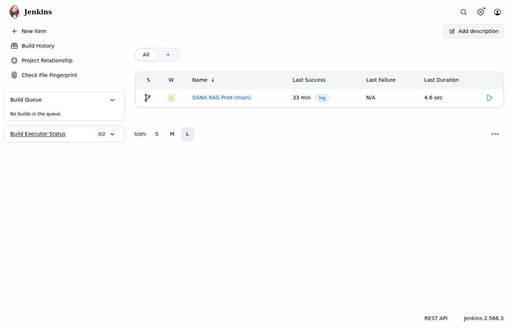
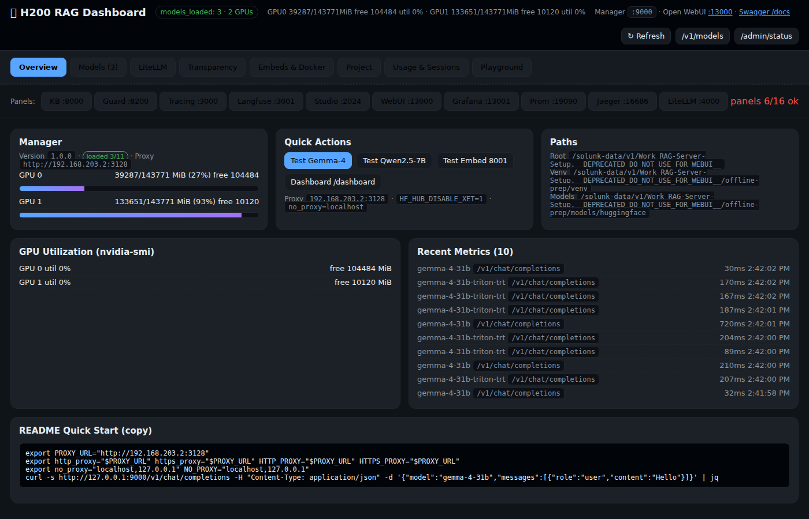
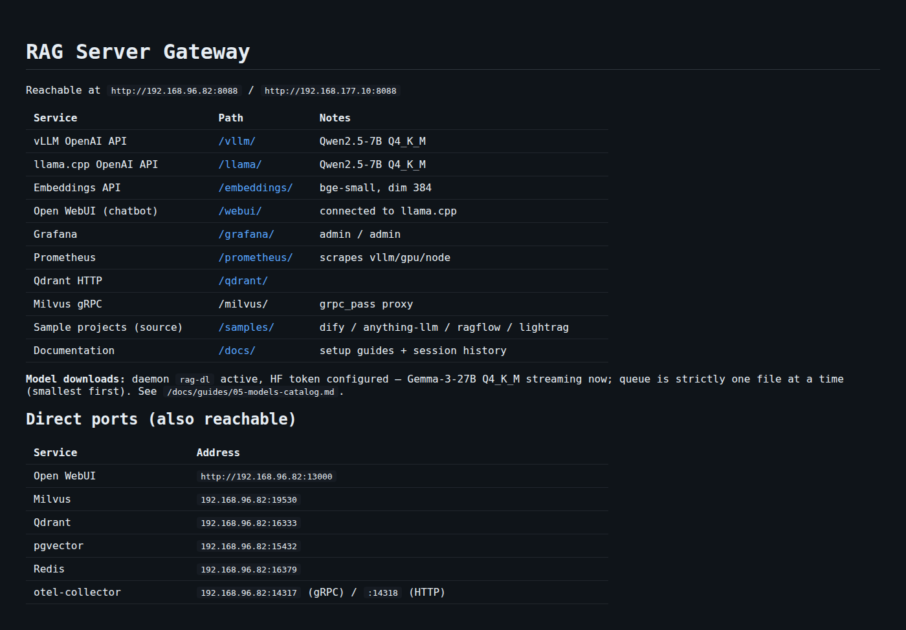
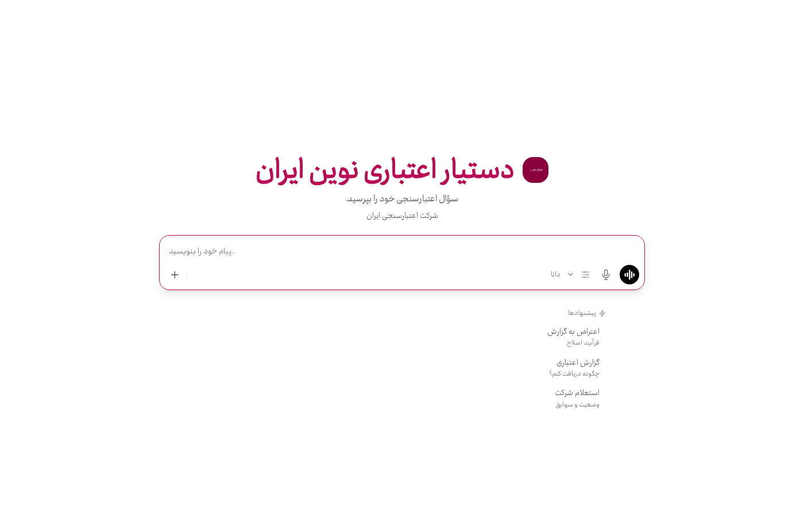
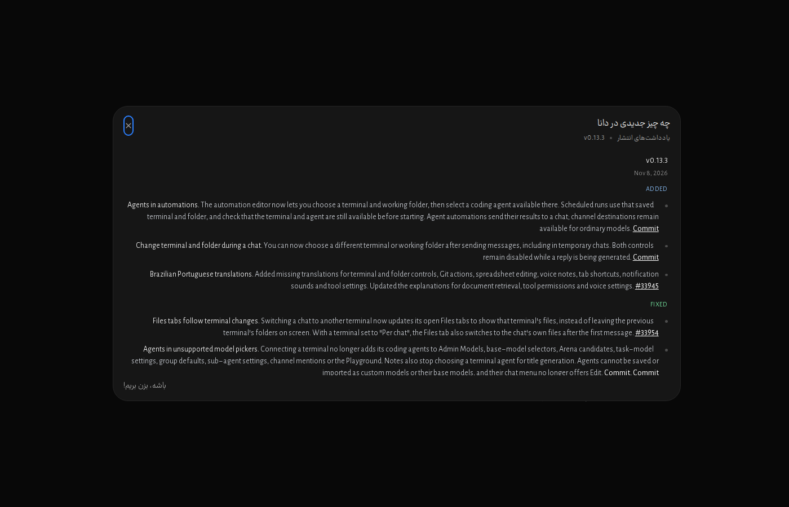

<!DOCTYPE html>
<html lang="en">
<head>
<meta charset="UTF-8">
<meta name="viewport" content="width=device-width, initial-scale=1.0">
<title>GPU Recovery Dashboard — 20261117T143954Z-ai-gpu1</title>
<style>
  * { box-sizing: border-box; }
  body { font-family: -apple-system, BlinkMacSystemFont, 'Segoe UI', Roboto, sans-serif; margin: 0; padding: 20px; background: #f5f5f7; color: #1d1d1f; line-height: 1.5; }
  .container { max-width: 1400px; margin: 0 auto; }
  header { background: linear-gradient(135deg, #1d1d1f 0%, #0a84ff 100%); color: #fff; padding: 32px; border-radius: 16px; margin-bottom: 24px; box-shadow: 0 4px 12px rgba(0,0,0,0.15); }
  header h1 { margin: 0 0 12px 0; font-size: 28px; font-weight: 600; }
  header .meta { font-size: 14px; opacity: 0.9; line-height: 1.6; }
  header .meta strong { color: #ffffff; }
  .grid { display: grid; grid-template-columns: repeat(auto-fit, minmax(260px, 1fr)); gap: 16px; margin-bottom: 24px; }
  .card { background: #fff; border-radius: 12px; padding: 20px; box-shadow: 0 2px 8px rgba(0,0,0,0.06); border: 1px solid #e5e5ea; }
  .card h2 { margin-top: 0; font-size: 16px; color: #0a84ff; border-bottom: 2px solid #0a84ff; padding-bottom: 8px; margin-bottom: 12px; }
  .status-healthy { color: #34c759; font-weight: 700; }
  .status-degraded { color: #ff9500; font-weight: 700; }
  .status-down { color: #ff3b30; font-weight: 700; }
  .status-passed { color: #34c759; font-weight: 700; }
  .status-failed { color: #ff3b30; font-weight: 700; }
  .status-skipped { color: #ff9500; font-weight: 700; }
  table { width: 100%; border-collapse: collapse; font-size: 13px; margin-bottom: 16px; }
  th, td { text-align: left; padding: 10px; border-bottom: 1px solid #e5e5ea; }
  th { background: #f2f2f7; font-weight: 600; color: #1d1d1f; }
  tr:hover { background: #fafafa; }
  .badge { display: inline-block; padding: 2px 8px; border-radius: 4px; font-size: 11px; font-weight: 600; }
  .badge-pass { background: #e6f7e6; color: #2e7d32; }
  .badge-fail { background: #fdecea; color: #c62828; }
  .badge-skip { background: #fff4e6; color: #e6a200; }
  .screenshot-grid { display: grid; grid-template-columns: repeat(auto-fill, minmax(260px, 1fr)); gap: 12px; }
  .screenshot-item { border: 1px solid #e5e5ea; border-radius: 8px; overflow: hidden; background: #fff; }
  .screenshot-item img { width: 100%; height: auto; display: block; }
  .screenshot-item .caption { padding: 8px; font-size: 12px; background: #f2f2f7; color: #666; }
  pre { background: #1e1e1e; color: #d4d4d4; padding: 14px; border-radius: 8px; overflow-x: auto; font-size: 12px; margin: 12px 0; }
  .section { margin-bottom: 24px; }
  .section h3 { color: #1d1d1f; margin-bottom: 12px; font-size: 18px; border-left: 4px solid #0a84ff; padding-left: 12px; }
  .collapsible { background: #fff; border: 1px solid #e5e5ea; border-radius: 8px; margin: 12px 0; overflow: hidden; }
  .collapsible-header { background: #f2f2f7; padding: 14px 18px; font-weight: 600; color: #1d1d1f; cursor: pointer; border-bottom: 1px solid #e5e5ea; user-select: none; display: flex; justify-content: space-between; align-items: center; }
  .collapsible-header:hover { background: #e8e8ed; }
  .collapsible-header .arrow { display: inline-block; width: 0; height: 0; border-left: 5px solid transparent; border-right: 5px solid transparent; border-bottom: 5px solid #666; transition: transform 0.2s; }
  .collapsible-header.expanded .arrow { transform: rotate(-90deg); }
  .collapsible-content { padding: 0; max-height: 0; overflow: hidden; transition: max-height 0.3s ease; background: #fff; }
  .collapsible-content.expanded { max-height: 2000px; padding: 18px; }
  .qa-item { background: #fff; border: 1px solid #e5e5ea; border-radius: 8px; margin: 12px 0; padding: 16px; }
  .qa-item h4 { margin: 0 0 8px 0; color: #0a84ff; font-size: 15px; }
  .qa-question { font-weight: 600; color: #1d1d1f; margin-bottom: 6px; }
  .qa-answer { background: #f2f2f7; padding: 12px; border-radius: 6px; color: #333; white-space: pre-wrap; font-size: 13px; }
  .qa-status { display: inline-block; margin-top: 8px; font-size: 12px; font-weight: 600; }
  .artifact-list { list-style: none; padding: 0; }
  .artifact-list li { padding: 8px 0; border-bottom: 1px solid #f2f2f7; }
  .artifact-list li a { color: #0a84ff; text-decoration: none; }
  .artifact-list li a:hover { text-decoration: underline; }
  .artifact-list li:last-child { border-bottom: none; }
  .auto-open { position: fixed; top: 20px; right: 20px; background: #0a84ff; color: #fff; padding: 12px 20px; border-radius: 8px; font-weight: 600; z-index: 1000; box-shadow: 0 4px 12px rgba(10,132,255,0.3); }
  .auto-open.hidden { display: none; }
</style>
</head>
<body>
<div class="container">
<header>
  <h1>🖥️ GPU Full Recovery Dashboard</h1>
  <div class="meta">
    <strong>Run ID:</strong> 20261117T143954Z-ai-gpu1<br>
    <strong>Host:</strong> ai-gpu1<br>
    <strong>Machine:</strong> production_gpu<br>
    <strong>UTC:</strong> 2026-11-17T14:55:45Z<br>
    <strong>Mode:</strong> compose<br>
    <strong>Umbrella HEAD:</strong> f0c47ca<br>
    <strong>Overall Status:</strong> <span class="status-HEALTHY">HEALTHY</span>
  </div>
</header>

<div class="grid">
  <div class="card">
    <h2>Overall Status</h2>
    <div class="badge status-HEALTHY">HEALTHY</div>
  </div>
  <div class="card">
    <h2>QA Results</h2>
    <div class="badge badge-pass">E2E: 10 / 10</div>
    <div class="badge badge-pass">Smoke: PASSED</div>
  </div>
  <div class="card">
    <h2>Restart</h2>
    <div class="badge badge-skip">FAILED</div>
  </div>
  <div class="card">
    <h2>GitHub Push</h2>
    <div class="badge badge-skip">NOT_ATTEMPTED</div>
  </div>
</div>

<!-- QA Test Results Section -->
<div class="section">
  <div class="card">
    <h2>💬 End-to-End QA Test Results</h2>
    <div class="qa-results">
<div class="qa-item"><h4>random_qa_1</h4><div class="qa-question">❓ اطلاعات گزارش اعتباری من در چه زمانی به روزرسانی می شود؟</div><div class="qa-answer">🤖 آیا منظور شما به‌روزرسانی گزارش تسهیلات (شخصی/شرکتی) است یا گزارش چک؟</div><div class="qa-status">HTTP: 200 — <span class="status-passed">PASS</span></div><div class="qa-status">retrieval_http=200 hits=10 chunks_used=0 wall_ms=7898.3</div></div><div class="qa-item"><h4>random_qa_2</h4><div class="qa-question">❓ چه مواردی باعث می شود امتیاز اعتباری شرکت ۲۵۰ شود؟</div><div class="qa-answer">🤖 با سلام، من دستیار هوشمند شرکت اعتبارسنجی ایران هستم و در زمینه‌های گزارش اعتباری، امتیاز و رتبه، بهبود امتیاز، سوابق منفی و چک‌ها به شما کمک می‌کنم.

امتیاز اعتباری شرکت در صورتی به حداقل مقدار ممکن یعنی ۲۵۰ (رتبه E3) کاهش می‌یابد که شرکت مشمول شرایطی به نام خطوط قرمز شود. این شرایط فارغ از هرگونه سوابق مثبت مالی، باعث سقوط مستقیم امتیاز می‌شوند.

مواردی که منجر به این اتفاق می‌شود عبارتند از: دا</div><div class="qa-status">HTTP: 200 — <span class="status-passed">PASS</span></div><div class="qa-status">retrieval_http=200 hits=10 chunks_used=5 wall_ms=23064.2</div></div><div class="qa-item"><h4>random_qa_3</h4><div class="qa-question">❓ هدف اصلی از اعتبارسنجی چیست؟</div><div class="qa-answer">🤖 با سلام، من دستیار هوشمند شرکت اعتبارسنجی ایران هستم و در زمینه‌هایی نظیر گزارش اعتباری، امتیاز و رتبه، روش‌های بهبود امتیاز، سوابق منفی و چک‌ها به شما کمک می‌کنم.

هدف اصلی از اعتبارسنجی، سنجش میزان اعتماد به اشخاص حقیقی و شرکت‌ها در تعاملات مالی است. این فرآیند با ارزیابی سوابق مالی و رفتاری، به دنبال برقراری عدالت در دریافت خدمات مالی و ترغیب افراد به بهبود رفتارهای مالی است.

در عمل، اعتبارسنج</div><div class="qa-status">HTTP: 200 — <span class="status-passed">PASS</span></div><div class="qa-status">retrieval_http=200 hits=10 chunks_used=5 wall_ms=9743.3</div></div><div class="qa-item"><h4>random_qa_4</h4><div class="qa-question">❓ تفاوت اثر چک برگشتی «رفع‌سوءاثرنشده» با «رفع‌سوءاثرشده» در امتیاز چک چیست؟</div><div class="qa-answer">🤖 با سلام، من دستیار هوشمند شرکت اعتبارسنجی ایران هستم و در زمینه‌های گزارش اعتباری، امتیاز و رتبه، بهبود امتیاز، سوابق منفی و چک‌ها به شما کمک می‌کنم.

تفاوت اصلی این دو وضعیت در میزان تأثیر بر امتیاز و محدودیت زمانی آن‌هاست. چک برگشتی رفع‌سوءاثرنشده جزو خطوط قرمز اعتباری محسوب می‌شود و بدون توجه به تاریخ صدور یا قدیمی بودن، امتیاز شخص را به کمترین حد ممکن یعنی امتیاز ۱ و رتبه E3 می‌رساند.

در مقاب</div><div class="qa-status">HTTP: 200 — <span class="status-passed">PASS</span></div><div class="qa-status">retrieval_http=200 hits=10 chunks_used=5 wall_ms=9242.1</div></div><div class="qa-item"><h4>random_qa_5</h4><div class="qa-question">❓ امتیاز اعتباری چیست و با رتبه اعتباری چه تفاوتی دارد؟</div><div class="qa-answer">🤖 با سلام، من دستیار هوشمند شرکت اعتبارسنجی ایران هستم و در زمینه‌های گزارش اعتباری، امتیاز و رتبه، روش‌های بهبود امتیاز، سوابق منفی و چک‌ها به شما کمک می‌کنم.

امتیاز اعتباری یک عدد سه‌رقمی است که در نسخه فعلی بین ۲۵۰ تا ۹۰۰ قرار دارد. این عدد بر اساس سوابق مالی شما در پایگاه داده و توسط مدل‌های هوش مصنوعی محاسبه می‌شود و هرچه این مقدار بالاتر باشد، نشان‌دهنده ریسک اعتباری کمتر و احتمال خوش‌حسابی ب</div><div class="qa-status">HTTP: 200 — <span class="status-passed">PASS</span></div><div class="qa-status">retrieval_http=200 hits=10 chunks_used=5 wall_ms=9131.1</div></div><div class="qa-item"><h4>random_qa_6</h4><div class="qa-question">❓ چگونه می توانم امتیازم را افزایش دهم؟</div><div class="qa-answer">🤖 با سلام، من دستیار هوشمند شرکت اعتبارسنجی ایران هستم و در زمینه‌های گزارش اعتباری، امتیاز و رتبه، روش‌های بهبود امتیاز، سوابق منفی و چک‌ها به شما کمک می‌کنم.

برای افزایش امتیاز و ارتقای رتبه اعتباری، کلیدی‌ترین اقدام، بهبود رفتار مالی و تداوم خوش‌حسابی است. این فرآیند معمولاً تدریجی و زمان‌بر است و با ثبت الگوهای مثبت در گزارش شما منعکس می‌شود.

در حوزه تسهیلات و بدهی‌ها، پرداخت به‌موقع اقساط، رف</div><div class="qa-status">HTTP: 200 — <span class="status-passed">PASS</span></div><div class="qa-status">retrieval_http=200 hits=10 chunks_used=5 wall_ms=11765.2</div></div><div class="qa-item"><h4>random_qa_7</h4><div class="qa-question">❓ آیا با امتیاز اعتباری پایین می توانم وام بگیرم؟</div><div class="qa-answer">🤖 با سلام، من دستیار هوشمند شرکت اعتبارسنجی ایران هستم و در زمینه‌های گزارش اعتباری، امتیاز و رتبه، بهبود امتیاز، سوابق منفی و چک‌ها به شما کمک می‌کنم.

بله، امکان دریافت وام با امتیاز و رتبه پایین وجود دارد. اگرچه بانک‌ها موظف هستند برای تصمیم‌گیری در خصوص اعطای تسهیلات از ابزارهای اعتبارسنجی استفاده کنند، اما تصمیم نهایی در مورد تایید یا رد درخواست وام بر عهده خود بانک است.

به این معنا که بسته به</div><div class="qa-status">HTTP: 200 — <span class="status-passed">PASS</span></div><div class="qa-status">retrieval_http=200 hits=10 chunks_used=5 wall_ms=10684.3</div></div><div class="qa-item"><h4>random_qa_8</h4><div class="qa-question">❓ خطوط قرمز امتیاز اعتباری برای افراد چیست؟</div><div class="qa-answer">🤖 آیا منظورتان رتبه رنگی گزارش اعتبارسنجی چک است (مثل سبز/آبی) یا رتبه تسهیلات؟</div><div class="qa-status">HTTP: 200 — <span class="status-passed">PASS</span></div><div class="qa-status">retrieval_http=200 hits=10 chunks_used=0 wall_ms=1075.0</div></div><div class="qa-item"><h4>random_qa_9</h4><div class="qa-question">❓ راه‌های رسمی دریافت گزارش و ارتباط با واحد پشتیبانی چیست؟</div><div class="qa-answer">🤖 برای راهنمایی دقیق‌تر، آیا درخواست شما مربوط به تسهیلات (افراد یا شرکت‌ها) است یا گزارش چک؟</div><div class="qa-status">HTTP: 200 — <span class="status-passed">PASS</span></div><div class="qa-status">retrieval_http=200 hits=10 chunks_used=0 wall_ms=3896.7</div></div><div class="qa-item"><h4>random_qa_10</h4><div class="qa-question">❓ خطوط قرمز امتیاز اعتباری برای کسب و کارها چیست؟</div><div class="qa-answer">🤖 آیا منظورتان رتبه رنگی گزارش اعتبارسنجی چک است (مثل سبز/آبی) یا رتبه تسهیلات؟</div><div class="qa-status">HTTP: 200 — <span class="status-passed">PASS</span></div><div class="qa-status">retrieval_http=200 hits=10 chunks_used=0 wall_ms=1162.1</div></div><div class="qa-item"><h4>random_qa_batch</h4><div class="qa-question">❓ batch seed=1794926435 n=10</div><div class="qa-answer">🤖 See random_qa.json for full payloads (10 samples).</div><div class="qa-status">HTTP: 200 — <span class="status-passed">PASS</span></div></div>
    </div>
    <div style="margin-top:16px; font-family:monospace; font-size:13px; white-space:pre-wrap; background:#f2f2f7; padding:12px; border-radius:8px;">qa_pass=10/10</div>
  </div>
</div>

<!-- Health Matrix Section -->
<div class="section">
  <div class="card">
    <h2>🌐 Health Matrix (All Endpoints)</h2>
    <table>
      <thead><tr><th>Port</th><th>Service</th><th>Code</th><th>Preview</th></tr></thead>
      <tbody>
      <tr><td>9000</td><td>manager</td><td><span class="badge badge-pass">200</span></td><td></td></tr>
      <tr><td>8000</td><td>kb</td><td><span class="badge badge-pass">200</span></td><td></td></tr>
      <tr><td>8200</td><td>guardrails</td><td><span class="badge badge-pass">200</span></td><td></td></tr>
      <tr><td>8100</td><td>orchestrator</td><td><span class="badge badge-pass">200</span></td><td></td></tr>
      <tr><td>3000</td><td>trace-collector</td><td><span class="badge badge-fail">000</span></td><td></td></tr>
      <tr><td>3001</td><td>langfuse</td><td><span class="badge badge-fail">000</span></td><td></td></tr>
      <tr><td>13000</td><td>webui</td><td><span class="badge badge-pass">200</span></td><td></td></tr>
      <tr><td>8085</td><td>jenkins</td><td><span class="badge badge-pass">200</span></td><td></td></tr>
      <tr><td>8088</td><td>service:8088</td><td><span class="badge badge-pass">200</span></td><td></td></tr>
      <tr><td>8010</td><td>service:8010</td><td><span class="badge badge-pass">200</span></td><td></td></tr>
      <tr><td>8001</td><td>service:8001</td><td><span class="badge badge-pass">200</span></td><td></td></tr>
      <tr><td>8002</td><td>service:8002</td><td><span class="badge badge-pass">200</span></td><td></td></tr>
      <tr><td>8003</td><td>service:8003</td><td><span class="badge badge-pass">200</span></td><td></td></tr>
      <tr><td>18000</td><td>gemma</td><td><span class="badge badge-pass">200</span></td><td></td></tr>
      <tr><td>18100</td><td>service:18100</td><td><span class="badge badge-pass">200</span></td><td></td></tr>
      <tr><td>18200</td><td>service:18200</td><td><span class="badge badge-pass">200</span></td><td></td></tr>
      <tr><td>13100</td><td>service:13100</td><td><span class="badge badge-pass">200</span></td><td></td></tr>
      </tbody>
    </table>
  </div>
</div>

<!-- Knowledgebase Section -->
<div class="section">
  <div class="card">
    <h2>📚 Knowledgebase Details</h2>
    <pre>=== Knowledgebase container ===
KB container: dana-stage-kb-1
--- KB container env ---
KB_EMBED_BACKEND=local
KB_EMBED_MODEL=sentence-transformers/paraphrase-multilingual-MiniLM-L12-v2
KB_RERANKER_BACKEND=openrouter
HF_HUB_CACHE=/models
KB_DB_MODE=pgvector
KB_USE_TANTIVY=false
KB_WEB_HOST=0.0.0.0
KB_EMBED_DIM=384
HF_HOME=/models
KB_OPENROUTER_BASE_URL=https://openrouter.ai/api/v1
KB_REDIS_URL=redis://REDACTED
KB_RERANKER_DEVICE=cpu
KB_OPENROUTER_API_KEY=
KB_DB_URL=postgresql://REDACTED
KB_WEB_PORT=8000
KB_EMBED_DEVICE=cpu
KB_RERANKER_MODEL=cohere/rerank-v3.5

--- KB container processes ---
OCI runtime exec failed: exec failed: unable to start container process: exec: "ps": executable file not found in $PATH

=== KB search API health ===
{
    "status": "ok",
    "db_mode": "pgvector",
    "db_driver": "asyncpg",
    "db_url": "127.0.0.1:5432/kb_manager",
    "db_ok": true,
    "doc_count": 21,
    "chunk_count": 1319,
    "reranker_ok": true,
    "embed_backend": "local",
    "reranker_backend": "local",
    "reranker_model": "BAAI/bge-reranker-v2-m3",
    "reranker_error": null,
    "dense_ok": true,
    "llm_upstream_mode": "self_hosted",
    "error": null
}

=== KB search test (sample query) ===
{
    "query": "\u0627\u0639\u062a\u0628\u0627\u0631\u0633\u0646\u062c\u06cc",
    "normalized_query": "\u0627\u0639\u062a\u0628\u0627\u0631\u0633\u0646\u062c\u06cc",
    "tokens": [
        "\u0627\u0639\u062a\u0628\u0627\u0631\u0633\u0646\u062c\u06cc",
        "\u0627\u0639\u062a",
        "\u0639\u062a\u0628",
        "\u062a\u0628\u0627",
        "\u0628\u0627\u0631",
        "\u0627\u0631\u0633",
        "\u0631\u0633\u0646",
        "\u0633\u0646\u062c",
        "\u0646\u062c\u06cc"
    ],
    "total_chunks_indexed": 1298,
    "bm25_results": [
        {
            "chunk_id": "74b21260-ee67-4006-aef3-a9b07cf38e08",
            "doc_id": "706eff4e-e9ba-4f4a-8fda-f1f358a8e3de",
            "doc_title": "\u0628\u0627\u0646\u06a9 \u0633\u0648\u0627\u0644\u0627\u062a \u0627\u0641\u0631\u0627\u062f \u062f\u0631 \u0632\u0645\u06cc\u0646\u0647 \u06af\u0632\u0627\u0631\u0634 \u0627\u0639\u062a\u0628\u0627\u0631\u0633\u0646\u062c\u06cc \u062a\u0633\u0647\u06cc\u0644\u0627\u062a",
            "heading_path": "Sheet: \u0633\u0648\u0627\u0644\u0627\u062a \u062d\u0642\u0648\u0642\u06cc",
            "folder_hierarchy": [
                "\u067e\u0627\u06cc\u06af\u0627\u0647 \u062f\u0627\u0646\u0634",
                "\u0627\u0634\u062e\u0627\u0635 \u062d\u0642\u0648\u0642\u06cc",
                "\u0627\u0639\u062a\u0628\u0627\u0631\u0633\u0646\u062c\u06cc \u062a\u0633\u0647\u06cc\u0644\u0627\u062a",
                "\u0628\u0627\u0646\u06a9 \u0633\u0648\u0627\u0644\u0627\u062a \u0627\u0641\u0631\u0627\u062f \u062f\u0631 \u0632\u0645\u06cc\u0646\u0647 \u06af\u0632\u0627\u0631\u0634 \u0627\u0639\u062a\u0628\u0627\u0631\u0633\u0646\u062c\u06cc \u062a\u0633\u0647\u06cc\u0644\u0627\u062a"
            ],
            "content_preview": "\u0633\u0648\u0627\u0644: \u0622\u06cc\u0627 \u0633\u0627\u0628\u0642\u0647 \u0633\u0641\u062a\u0647 \u062f\u0631 \u0633\u0627\u0645\u0627\u0646\u0647 \u0627\u0639\u062a\u0628\u0627\u0631\u0633\u0646\u062c\u06cc \u062b\u0628\u062a \u0645\u06cc\u200c\u0634\u0648\u062f \u0648 \u0628\u0631 \u0631\u062a\u0628\u0647 \u0648 \u0627\u0645\u062a\u06cc\u0627\u0632 \u0645\u0646 \u0627\u062b\u0631 \u0645\u06cc\u200c\u06af\u0630\u0627\u0631\u062f\u061f\n\u067e\u0627\u0633\u062e \u06a9\u0648\u062a\u0627\u0647: \u062e\u06cc\u0631. \u062f\u0631 \u062d\u0627\u0644 \u062d\u0627\u0636\u0631 \u062f\u0627\u062f\u0647 \u0647\u0627\u06cc \u0645\u0631\u0628\u0648\u0637 \u0628\u0647 \u0633\u0641\u062a\u0647 \u062f\u0631 \u0627\u0639\u062a\u0628\u0627\u0631\u0633\u0646\u062c\u06cc \u0627\u0641\u0631\u0627\u062f \u0648 \u0634\u0631\u06a9\u062a \u0647\u0627 \u0644\u062d\u0627\u0638 \u0646\u0645\u06cc\u200c\u0634\u0648\u062f.\n\u067e\u0627\u0633\u062e \u06a9\u0627\u0645\u0644: \u062f\u0631 \u062d\u0627\u0644 \u062d\u0627\u0636\u0631 \u062f\u0627\u062f\u0647 \u0647\u0627\u06cc \u0645\u0631\u0628\u0648\u0637 \u0628\u0647 \u0633\u0641\u062a\u0647 \u062f\u0631 \u0627\u0639\u062a\u0628\u0627\u0631\u0633\u0646\u062c\u06cc \u0627\u0641\u0631\u0627\u062f \u0648 \u0634\u0631\u06a9\u062a \u0647\u0627 \u0644\u062d\u0627\u0638 \u0646\u0645\u06cc\u200c\u0634\u0648\u062f. \u0633\u0627\u0628\u0642\u0647 \u062a\u0633\u0647\u06cc\u0644\u0627\u062a (\u0686\u0647 \u0645\u0633\u062a\u0642\u06cc\u0645 \u0648 \u0686\u0647 \u062f\u0631 \u0646\u0642\u0634 \u0636\u0627\u0645\u0646)\u060c \u0686\u06a9\u200c\u0647\u0627\u06cc \u0628\u0631\u06af\u0634\u062a\u06cc\u060c \u0628\u062f\u0647\u06cc\u200c\u0647\u0627\u06cc \u0645\u0627\u0644\u06cc\u0627\u062a\u06cc\u060c \u0645\u062d\u06a9\u0648\u0645\u06cc\u062a \u0645\u0627\u0644\u06cc \u0648 \u0642\u0636\u0627\u06cc\u06cc \u0648 \u0635\u062f\u06a9 \u062f\u0631\u0622\u0645\u062f\u06cc \u062f\u0631 \u067e\u0627\u06cc\u06af\u0627\u0647 \u062f\u0627\u062f\u0647 \u0627\u0639\u062a\u0628\u0627\u0631\u0633\u0646\u062c\u06cc \u062b\u0628\u062a \u0645\u06cc\u200c\u0634\u0648\u062f \u0648 \u0628\u0631 \u0631\u062a\u0628\u0647 \u0648 \u0627\u0645\u062a\u06cc\u0627\u0632 \u0627\u0639\u062a\u0628\u0627\u0631\u06cc \u0627\u0641\u0631\u0627\u062f \u062a\u0627\u062b\u06cc\u0631\u06af\u0630\u0627\u0631 \u0627\u0633\u062a.\n\u062f\u0633\u062a\u0647\u200c\u0628\u0646\u062f\u06cc: \u0639\u0648\u0627\u0645\u0644 \u0645\u0648\u062b\u0631 \u0628\u0631 \u0627\u0645\u062a\u06cc\u0627\u0632",
            "content": "\u0633\u0648\u0627\u0644: \u0622\u06cc\u0627 \u0633\u0627\u0628\u0642\u0647 \u0633\u0641\u062a\u0647 \u062f\u0631 \u0633\u0627\u0645\u0627\u0646\u0647 \u0627\u0639\u062a\u0628\u0627\u0631\u0633\u0646\u062c\u06cc \u062b\u0628\u062a \u0645\u06cc\u200c\u0634\u0648\u062f \u0648 \u0628\u0631 \u0631\u062a\u0628\u0647 \u0648 \u0627\u0645\u062a\u06cc\u0627\u0632 \u0645\u0646 \u0627\u062b\u0631 \u0645\u06cc\u200c\u06af\u0630\u0627\u0631\u062f\u061f\n\u067e\u0627\u0633\u062e \u06a9\u0648\u062a\u0627\u0647: \u062e\u06cc\u0631. \u062f\u0631 \u062d\u0627\u0644 \u062d\u0627\u0636\u0631 \u062f\u0627\u062f\u0647 \u0647\u0627\u06cc \u0645\u0631\u0628\u0648\u0637 \u0628\u0647 \u0633\u0641\u062a\u0647 \u062f\u0631 \u0627\u0639\u062a\u0628\u0627\u0631\u0633\u0646\u062c\u06cc \u0627\u0641\u0631\u0627\u062f \u0648 \u0634\u0631\u06a9\u062a \u0647\u0627 \u0644\u062d\u0627\u0638 \u0646\u0645\u06cc\u200c\u0634\u0648\u062f.\n\u067e\u0627\u0633\u062e \u06a9\u0627\u0645\u0644: \u062f\u0631 \u062d\u0627\u0644 \u062d\u0627\u0636\u0631 \u062f\u0627\u062f\u0647 \u0647\u0627\u06cc \u0645\u0631\u0628\u0648\u0637 \u0628\u0647 \u0633\u0641\u062a\u0647 \u062f\u0631 \u0627\u0639\u062a\u0628\u0627\u0631\u0633\u0646\u062c\u06cc \u0627\u0641\u0631\u0627\u062f \u0648 \u0634\u0631\u06a9\u062a \u0647\u0627 \u0644\u062d\u0627\u0638 \u0646\u0645\u06cc\u200c\u0634\u0648\u062f. \u0633\u0627\u0628\u0642\u0647 \u062a\u0633\u0647\u06cc\u0644\u0627\u062a (\u0686\u0647 \u0645\u0633\u062a\u0642\u06cc\u0645 \u0648 \u0686\u0647 \u062f\u0631 \u0646\u0642\u0634 \u0636\u0627\u0645\u0646)\u060c \u0686\u06a9\u200c\u0647\u0627\u06cc \u0628\u0631\u06af\u0634\u062a\u06cc\u060c \u0628\u062f\u0647\u06cc\u200c\u0647\u0627\u06cc \u0645\u0627\u0644\u06cc\u0627\u062a\u06cc\u060c \u0645\u062d\u06a9\u0648\u0645\u06cc\u062a \u0645\u0627\u0644\u06cc \u0648 \u0642\u0636\u0627\u06cc\u06cc \u0648 \u0635\u062f\u06a9 \u062f\u0631\u0622\u0645\u062f\u06cc \u062f\u0631 \u067e\u0627\u06cc\u06af\u0627\u0647 \u062f\u0627\u062f\u0647 \u0627\u0639\u062a\u0628\u0627\u0631\u0633\u0646\u062c\u06cc \u062b\u0628\u062a \u0645\u06cc\u200c\u0634\u0648\u062f \u0648 \u0628\u0631 \u0631\u062a\u0628\u0647 \u0648 \u0627\u0645\u062a\u06cc\u0627\u0632 \u0627\u0639\u062a\u0628\u0627\u0631\u06cc \u0627\u0641\u0631\u0627\u062f \u062a\u0627\u062b\u06cc\u0631\u06af\u0630\u0627\u0631 \u0627\u0633\u062a.\n\u062f\u0633\u062a\u0647\u200c\u0628\u0646\u062f\u06cc: \u0639\u0648\u0627\u0645\u0644 \u0645\u0648\u062b\u0631 \u0628\u0631 \u0627\u0645\u062a\u06cc\u0627\u0632",
            "bm25_score": 76.9812,
            "semantic_score": 0.0,
            "dense_score": 0.0,
            "hybrid_score": 0.0,
            "rerank_score": 0.0,
            "ordinal": 263
        },
        {
            "chunk_id": "cb143421-5868-4723-bb14-a92671cb3deb",
            "doc_id": "7468c636-f116-4967-be6e-41671e960eb7",
            "doc_title": "\u0628\u0627\u0646\u06a9 \u0633\u0648\u0627\u0644\u0627\u062a \u0627\u0641\u0631\u0627\u062f \u062f\u0631 \u0632\u0645\u06cc\u0646\u0647 \u06af\u0632\u0627\u0631\u0634 \u0627\u0639\u062a\u0628\u0627\u0631\u0633\u0646\u062c\u06cc \u062a\u0633\u0647\u06cc\u0644\u0627\u062a-\u0627\u0635\u0644\u06cc",
            "heading_path": "Sheet: Sheet1",
            "folder_hierarchy": [
                "\u067e\u0627\u06cc\u06af\u0627\u0647 \u062f\u0627\u0646\u0634",
                "\u0627\u0634\u062e\u0627\u0635 \u062d\u0642\u06cc\u0642\u06cc",
                "\u0627\u0639\u062a\u0628\u0627\u0631\u0633\u0646\u062c\u06cc \u062a\u0633\u0647\u06cc\u0644\u0627\u062a",
                "\u0628\u0627\u0646\u06a9 \u0633\u0648\u0627\u0644\u0627\u062a"
            ],
            "content_preview": "\u0633\u0648\u0627\u0644: \u0622\u06cc\u0627 \u0633\u0627\u0628\u0642\u0647 \u0633\u0641\u062a\u0647 \u062f\u0631 \u0633\u0627\u0645\u0627\u0646\u0647 \u0627\u0639\u062a\u0628\u0627\u0631\u0633\u0646\u062c\u06cc \u062b\u0628\u062a \u0645\u06cc\u200c\u0634\u0648\u062f \u0648 \u0628\u0631 \u0631\u062a\u0628\u0647 \u0648 \u0627\u0645\u062a\u06cc\u0627\u0632 \u0645\u0646 \u0627\u062b\u0631 \u0645\u06cc\u200c\u06af\u0630\u0627\u0631\u062f\u061f\n\u067e\u0627\u0633\u062e \u06a9\u0648\u062a\u0627\u0647: \u062e\u06cc\u0631. \u062f\u0631 \u062d\u0627\u0644 \u062d\u0627\u0636\u0631 \u062f\u0627\u062f\u0647 \u0647\u0627\u06cc \u0645\u0631\u0628\u0648\u0637 \u0628\u0647 \u0633\u0641\u062a\u0647 \u062f\u0631 \u0627\u0639\u062a\u0628\u0627\u0631\u0633\u0646\u062c\u06cc \u0627\u0641\u0631\u0627\u062f \u0648 \u0634\u0631\u06a9\u062a \u0647\u0627 \u0644\u062d\u0627\u0638 \u0646\u0645\u06cc\u200c\u0634\u0648\u062f.\n\u067e\u0627\u0633\u062e \u06a9\u0627\u0645\u0644: \u062e\u06cc\u0631. \u062f\u0631 \u062d\u0627\u0644 \u062d\u0627\u0636\u0631 \u062f\u0627\u062f\u0647 \u0647\u0627\u06cc \u0645\u0631\u0628\u0648\u0637 \u0628\u0647 \u0633\u0641\u062a\u0647 \u062f\u0631 \u0627\u0639\u062a\u0628\u0627\u0631\u0633\u0646\u062c\u06cc \u0627\u0641\u0631\u0627\u062f \u0648 \u0634\u0631\u06a9\u062a \u0647\u0627 \u0644\u062d\u0627\u0638 \u0646\u0645\u06cc\u200c\u0634\u0648\u062f. \u0633\u0627\u0628\u0642\u0647 \u062a\u0633\u0647\u06cc\u0644\u0627\u062a (\u0686\u0647 \u0645\u0633\u062a\u0642\u06cc\u0645 \u0648 \u0686\u0647 \u062f\u0631 \u0646\u0642\u0634 \u0636\u0627\u0645\u0646) \u060c \u0686\u06a9\u200c\u0647\u0627\u06cc \u0628\u0631\u06af\u0634\u062a\u06cc\u060c \u0628\u062f\u0647\u06cc\u200c\u0647\u0627\u06cc \u0645\u0627\u0644\u06cc\u0627\u062a\u06cc\u060c \u0645\u062d\u06a9\u0648\u0645\u06cc\u062a \u0645\u0627\u0644\u06cc \u0648 \u0642\u0636\u0627\u06cc\u06cc \u0648 \u0635\u062f\u06a9 \u062f\u0631\u0622\u0645\u062f\u06cc \u062f\u0631 \u067e\u0627\u06cc\u06af\u0627\u0647 \u062f\u0627\u062f\u0647 \u0627\u0639\u062a\u0628\u0627\u0631\u0633\u0646\u062c\u06cc \u062b\u0628\u062a \u0645\u06cc\u200c\u0634\u0648\u062f \u0648 \u0628\u0631 \u0631\u062a\u0628\u0647 \u0648 \u0627\u0645\u062a\u06cc\u0627\u0632 \u0627\u0639\u062a\u0628\u0627\u0631\u06cc \u0627\u0641\u0631\u0627\u062f \u062a\u0627\u062b\u06cc\u0631\u06af\u0630\u0627\u0631 \u0627\u0633\u062a.\n\u062f\u0633\u062a\u0647\u200c\u0628\u0646\u062f\u06cc: \u0633\u0648\u0627\u0628\u0642 \u0645\u0646\u0641\u06cc \u0648 \u0628\u062f\u0647\u06cc\u200c\u0647\u0627",
            "content": "\u0633\u0648\u0627\u0644: \u0622\u06cc\u0627 \u0633\u0627\u0628\u0642\u0647 \u0633\u0641\u062a\u0647 \u062f\u0631 \u0633\u0627\u0645\u0627\u0646\u0647 \u0627\u0639\u062a\u0628\u0627\u0631\u0633\u0646\u062c\u06cc \u062b\u0628\u062a \u0645\u06cc\u200c\u0634\u0648\u062f \u0648 \u0628\u0631 \u0631\u062a\u0628\u0647 \u0648 \u0627\u0645\u062a\u06cc\u0627\u0632 \u0645\u0646 \u0627\u062b\u0631 \u0645\u06cc\u200c\u06af\u0630\u0627\u0631\u062f\u061f\n\u067e\u0627\u0633\u062e \u06a9\u0648\u062a\u0627\u0647: \u062e\u06cc\u0631. \u062f\u0631 \u062d\u0627\u0644 \u062d\u0627\u0636\u0631 \u062f\u0627\u062f\u0647 \u0647\u0627\u06cc \u0645\u0631\u0628\u0648\u0637 \u0628\u0647 \u0633\u0641\u062a\u0647 \u062f\u0631 \u0627\u0639\u062a\u0628\u0627\u0631\u0633\u0646\u062c\u06cc \u0627\u0641\u0631\u0627\u062f \u0648 \u0634\u0631\u06a9\u062a \u0647\u0627 \u0644\u062d\u0627\u0638 \u0646\u0645\u06cc\u200c\u0634\u0648\u062f.\n\u067e\u0627\u0633\u062e \u06a9\u0627\u0645\u0644: \u062e\u06cc\u0631. \u062f\u0631 \u062d\u0627\u0644 \u062d\u0627\u0636\u0631 \u062f\u0627\u062f\u0647 \u0647\u0627\u06cc \u0645\u0631\u0628\u0648\u0637 \u0628\u0647 \u0633\u0641\u062a\u0647 \u062f\u0631 \u0627\u0639\u062a\u0628\u0627\u0631\u0633\u0646\u062c\u06cc \u0627\u0641\u0631\u0627\u062f \u0648 \u0634\u0631\u06a9\u062a \u0647\u0627 \u0644\u062d\u0627\u0638 \u0646\u0645\u06cc\u200c\u0634\u0648\u062f. \u0633\u0627\u0628\u0642\u0647 \u062a\u0633\u0647\u06cc\u0644\u0627\u062a (\u0686\u0647 \u0645\u0633\u062a\u0642\u06cc\u0645 \u0648 \u0686\u0647 \u062f\u0631 \u0646\u0642\u0634 \u0636\u0627\u0645\u0646) \u060c \u0686\u06a9\u200c\u0647\u0627\u06cc \u0628\u0631\u06af\u0634\u062a\u06cc\u060c \u0628\u062f\u0647\u06cc\u200c\u0647\u0627\u06cc \u0645\u0627\u0644\u06cc\u0627\u062a\u06cc\u060c \u0645\u062d\u06a9\u0648\u0645\u06cc\u062a \u0645\u0627\u0644\u06cc \u0648 \u0642\u0636\u0627\u06cc\u06cc \u0648 \u0635\u062f\u06a9 \u062f\u0631\u0622\u0645\u062f\u06cc \u062f\u0631 \u067e\u0627\u06cc\u06af\u0627\u0647 \u062f\u0627\u062f\u0647 \u0627\u0639\u062a\u0628\u0627\u0631\u0633\u0646\u062c\u06cc \u062b\u0628\u062a \u0645\u06cc\u200c\u0634\u0648\u062f \u0648 \u0628\u0631 \u0631\u062a\u0628\u0647 \u0648 \u0627\u0645\u062a\u06cc\u0627\u0632 \u0627\u0639\u062a\u0628\u0627\u0631\u06cc \u0627\u0641\u0631\u0627\u062f \u062a\u0627\u062b\u06cc\u0631\u06af\u0630\u0627\u0631 \u0627\u0633\u062a.\n\u062f\u0633\u062a\u0647\u200c\u0628\u0646\u062f\u06cc: \u0633\u0648\u0627\u0628\u0642 \u0645\u0646\u0641\u06cc \u0648 \u0628\u062f\u0647\u06cc\u200c\u0647\u0627",
            "bm25_score": 76.9812,
            "semantic_score": 0.0,
            "dense_score": 0.0,
            "hybrid_score": 0.0,
            "rerank_score": 0.0,
            "ordinal": 230
        },
no kb data</pre>
  </div>
</div>

<!-- Collapsible Logs Section -->
<div class="section">
  <div class="card">
    <h2>📋 All Logs &amp; Artifacts (Expand/Collapse)</h2>
    <div class="collapsible">
      <div class="collapsible-header" onclick="toggleCollapsible(this)">📄 host_metadata.txt <span class="arrow"></span></div>
      <div class="collapsible-content" id="log-host_metadata_txt">
        <pre>utc=2026-11-17T14:39:54Z
hostname=ai-gpu1
user=root
uid=0
Linux ai-gpu1 6.8.0-147-generic #147-Ubuntu SMP PREEMPT_DYNAMIC Thu Sep 24 11:33:16 UTC 2026 x86_64 x86_64 x86_64 GNU/Linux
 14:39:54 up 6 days,  9:44,  2 users,  load average: 2.50, 0.92, 0.68
--- nvidia-smi ---
Tue Nov 17 14:39:54 2026       
+-----------------------------------------------------------------------------------------+
| NVIDIA-SMI 580.178.04             Driver Version: 580.178.04     CUDA Version: 13.0     |
+-----------------------------------------+------------------------+----------------------+
| GPU  Name                 Persistence-M | Bus-Id          Disp.A | Volatile Uncorr. ECC |
| Fan  Temp   Perf          Pwr:Usage/Cap |           Memory-Usage | GPU-Util  Compute M. |
|                                         |                        |               MIG M. |
|=========================================+========================+======================|
|   0  NVIDIA H200 NVL                Off |   00000000:03:00.0 Off |                    0 |
| N/A   32C    P0             94W /  600W |   39287MiB / 143771MiB |      0%      Default |
|                                         |                        |             Disabled |
+-----------------------------------------+------------------------+----------------------+
|   1  NVIDIA H200 NVL                Off |   00000000:03:01.0 Off |                    0 |
| N/A   31C    P0             93W /  600W |  133651MiB / 143771MiB |      0%      Default |
|                                         |                        |             Disabled |
+-----------------------------------------+------------------------+----------------------+

+-----------------------------------------------------------------------------------------+
| Processes:                                                                              |
|  GPU   GI   CI              PID   Type   Process name                        GPU Memory |
|        ID   ID                                                               Usage      |
|=========================================================================================|
|    0   N/A  N/A           72979      C   ...line-prep/venv/bin/python3.12      35716MiB |
|    0   N/A  N/A         1070192      C   .../offline-prep/venv/bin/python       3556MiB |
|    1   N/A  N/A           11624      C   python3                               13292... |
|    1   N/A  N/A           11625      C   ...ep/venv-trtllm/bin/python3.12        588MiB |
+-----------------------------------------------------------------------------------------+
--- docker ps -a (all containers, up and down) ---
NAMES                       STATUS                    IMAGE                                          PORTS
dana-webui-prod             Up 21 hours (healthy)     rag-webui:dana                                 127.0.0.1:13000-&gt;8080/tcp, 192.168.177.10:13000-&gt;8080/tcp, 192.168.96.82:13000-&gt;8080/tcp
dana-jenkins-prod           Up 29 hours               dana-jenkins:production                        127.0.0.1:50000-&gt;50000/tcp, 127.0.0.1:8085-&gt;8080/tcp
dana-stage-webui-1          Up 2 days (healthy)       4e76b1243fab                                   127.0.0.1:13100-&gt;8080/tcp
dana-stage-orchestrator-1   Up 2 days (healthy)       a865567e3a18                                   127.0.0.1:18100-&gt;8100/tcp
dana-stage-guardrails-1     Up 2 days (healthy)       0f3a49c6bfe2                                   127.0.0.1:18200-&gt;8200/tcp
dana-stage-kb-1             Up 2 days (healthy)       e3e94a77cac2                                   127.0.0.1:18000-&gt;8000/tcp
dana-stage-litellm-1        Up 2 days (healthy)       ghcr.io/berriai/litellm:main-latest            127.0.0.1:14000-&gt;4000/tcp
dana-stage-redis-1          Up 2 days (healthy)       redis:7-alpine                                 127.0.0.1:26379-&gt;6379/tcp
dana-stage-postgres-1       Up 2 days (healthy)       pgvector/pgvector:pg16                         127.0.0.1:25432-&gt;5432/tcp
dana-stage-tracing-1        Up 2 days (healthy)       129c506c7412                                   127.0.0.1:13001-&gt;3000/tcp
dana-prod-webui-1           Created                   4e76b1243fab                                   
dana-prod-orchestrator-1    Created                   a865567e3a18                                   
dana-prod-kb-1              Created                   e3e94a77cac2                                   
dana-prod-redis-1           Exited (0) 2 days ago     redis:7-alpine                                 
dana-prod-postgres-1        Exited (0) 2 days ago     pgvector/pgvector:pg16                         
dana-prod-guardrails-1      Exited (0) 2 days ago     0f3a49c6bfe2                                   
dana-prod-tracing-1         Exited (0) 2 days ago     129c506c7412                                   
pgvector-kb-prod            Up 5 days                 pgvector/pgvector:pg16                         127.0.0.1:5432-&gt;5432/tcp
redis-kb-prod               Up 5 days                 redis:7-alpine                                 127.0.0.1:16379-&gt;6379/tcp
rag-embed-prod-8003         Up 5 days (healthy)       b8a783f99485                                   0.0.0.0:8003-&gt;8001/tcp, [::]:8003-&gt;8001/tcp
rag-embed-prod-8002         Up 5 days (healthy)       b8a783f99485                                   0.0.0.0:8002-&gt;8001/tcp, [::]:8002-&gt;8001/tcp
rag-embed-prod-8001         Up 5 days (healthy)       b8a783f99485                                   0.0.0.0:8001-&gt;8001/tcp, [::]:8001-&gt;8001/tcp
rag-guardrails-test         Exited (0) 6 days ago     b085264f0ac7                                   
rag-embed-test-8004         Exited (137) 6 days ago   b8a783f99485                                   
rag-embed-test-8005         Exited (137) 6 days ago   b8a783f99485                                   
rag-embed-test-8006         Exited (137) 6 days ago   b8a783f99485                                   
rag-tracing-test            Exited (0) 6 days ago     edffec18b032                                   
rag-manager-test            Exited (0) 6 days ago     f3811bed0f03                                   
prometheus-test             Exited (0) 6 days ago     prom/prometheus:v2.52.0                        
litellm-proxy               Exited (0) 6 days ago     ghcr.io/berriai/litellm:main-latest            
otel-test                   Exited (0) 6 days ago     otel/opentelemetry-collector-contrib:0.105.0   
jaeger-test                 Exited (0) 6 days ago     jaegertracing/all-in-one:latest                
grafana-test                Exited (0) 6 days ago     grafana/grafana:11.2.0                         
node-exporter-test          Exited (143) 6 days ago   prom/node-exporter:v1.8.1                      
milvus-test                 Exited (134) 6 days ago   milvusdb/milvus:latest                         
--- df -h ---
Filesystem                         Size  Used Avail Use% Mounted on
tmpfs                              101G  2.9M  101G   1% /run
efivarfs                           256K   63K  189K  25% /sys/firmware/efi/efivars
/dev/mapper/ubuntu--vg-ubuntu--lv   48G   34G   12G  75% /
tmpfs                              504G   12K  504G   1% /dev/shm
tmpfs                              5.0M     0  5.0M   0% /run/lock
/dev/sda2                          2.0G  202M  1.6G  12% /boot
/dev/sda1                          1.1G  6.2M  1.1G   1% /boot/efi
/dev/sdb1                          6.0T  2.2T  3.6T  38% /splunk-data
tmpfs                              101G   20K  101G   1% /run/user/1002
overlay                            6.0T  2.2T  3.6T  38% /splunk-data/v1/docker-data/buildkit/containerd-overlayfs/cachemounts/buildkit3512849312
overlay                            6.0T  2.2T  3.6T  38% /splunk-data/v1/docker-data/rootfs/overlayfs/c1ea84206ff43e362d44022e90eb1646610b15cdd16b4a42d657a3cdbddc30d1
overlay                            6.0T  2.2T  3.6T  38% /splunk-data/v1/docker-data/rootfs/overlayfs/28d8930c20f5fb3fc4fdb58a041cc3d653e1060ad3a2342891f18bf053f2c84e
overlay                            6.0T  2.2T  3.6T  38% /splunk-data/v1/docker-data/rootfs/overlayfs/ae6370c36424811234c4c99ad571dc4a010f2b17cf7890b36186bd9cdbd7127c
overlay                            6.0T  2.2T  3.6T  38% /splunk-data/v1/docker-data/buildkit/containerd-overlayfs/cachemounts/buildkit3180188743
overlay                            6.0T  2.2T  3.6T  38% /splunk-data/v1/docker-data/buildkit/containerd-overlayfs/cachemounts/buildkit3972721458
overlay                            6.0T  2.2T  3.6T  38% /splunk-data/v1/docker-data/rootfs/overlayfs/3c2df56c04d6ddaae6b7988b83b6ac135a94986a8671a02c8919b715c2fa7a90
overlay                            6.0T  2.2T  3.6T  38% /splunk-data/v1/docker-data/rootfs/overlayfs/a83a323a13167ab0a48001a455cba7754e498ec6301aca10461de12e3a83a8d0
overlay                            6.0T  2.2T  3.6T  38% /splunk-data/v1/docker-data/rootfs/overlayfs/7ac8e5347529de03da5cb73b4f5e27c21fee0e6dbade88aa299dab4f975e7797
overlay                            6.0T  2.2T  3.6T  38% /splunk-data/v1/docker-data/rootfs/overlayfs/f310a9ceb2b6d5a0cb0e411dfb3156223ce8111f8633ae0ca795aed4626091f6
overlay                            6.0T  2.2T  3.6T  38% /splunk-data/v1/docker-data/rootfs/overlayfs/19c642bd0344599417057ca47b4ed0d97b3eb13623bc93d8aca65b15df9ea6c5
overlay                            6.0T  2.2T  3.6T  38% /splunk-data/v1/docker-data/rootfs/overlayfs/a996437ff572357655a1e355bb46b6ecf89467dd136277a3e6f7e09dee60a399
overlay                            6.0T  2.2T  3.6T  38% /splunk-data/v1/docker-data/rootfs/overlayfs/83c268ecbc989e704658c649f7d4660bb29b0760bf35fb2bbaa953e41498463d
overlay                            6.0T  2.2T  3.6T  38% /splunk-data/v1/docker-data/rootfs/overlayfs/507d7b5e80dddfd5a76fee257873355e989381eadcb962659c57564c30f08cd8
overlay                            6.0T  2.2T  3.6T  38% /splunk-data/v1/docker-data/rootfs/overlayfs/44147e2be732d57e53abaa887192ca9dcae187399ce69518b84c8d375d9bcd0a
overlay                            6.0T  2.2T  3.6T  38% /splunk-data/v1/docker-data/rootfs/overlayfs/43849738f3ae2ecc07f8a02f3ed90847c52c1eb559ff7d9c9c4b98b72ee47c1f
overlay                            6.0T  2.2T  3.6T  38% /splunk-data/v1/containerd-data/tmpmounts/containerd-mount1503059490
overlay                            6.0T  2.2T  3.6T  38% /splunk-data/v1/containerd-data/tmpmounts/containerd-mount3777808132
overlay                            6.0T  2.2T  3.6T  38% /splunk-data/v1/containerd-data/tmpmounts/containerd-mount1102804803
overlay                            6.0T  2.2T  3.6T  38% /splunk-data/v1/containerd-data/tmpmounts/containerd-mount2254040735
overlay                            6.0T  2.2T  3.6T  38% /splunk-data/v1/docker-data/rootfs/overlayfs/a1defda1f8cd37cc69f58f88fb1b01cab7b3ec7073a2548c9f68ec6629b43203
overlay                            6.0T  2.2T  3.6T  38% /splunk-data/v1/docker-data/rootfs/overlayfs/afd9c2193c6e4c9cdb2748f427a0de07d1c414e552db0cd4aaa07114903e6681
--- free -h ---
               total        used        free      shared  buff/cache   available
Mem:           1.0Ti        90Gi       719Gi       1.4Gi       206Gi       916Gi
Swap:          8.0Gi          0B       8.0Gi
--- git state ---
git_umbrella=f0c47ca
git_ss=005dbda
last_good=f0c47cad2a280aab7407cd68565b9dbd12bec56c
deployed=none
--- last reboots/shutdowns ---
a.nikkha pts/0        192.168.107.97   Mon Nov 16 17:03 - 17:58  (00:55)
a.nikkha pts/0        192.168.107.97   Mon Nov 16 15:35 - 16:14  (00:38)
yadegari pts/1        192.168.107.97   Mon Nov 16 14:55 - 15:28  (00:33)
yadegari pts/0        192.168.107.97   Mon Nov 16 14:36 - 15:07  (00:31)
a.nikkha pts/0        192.168.107.97   Mon Nov 16 07:43 - 09:44  (02:00)
a.nikkha pts/0        192.168.107.97   Sun Nov 15 12:05 - 15:16  (03:11)
a.nikkha pts/0        192.168.107.97   Sat Nov 14 18:43 - 18:53  (00:09)
a.nikkha pts/0        192.168.107.97   Sat Nov 14 17:25 - 18:37  (01:11)
a.nikkha pts/0        192.168.107.97   Sat Nov 14 16:49 - 17:12  (00:23)
a.nikkha pts/0        192.168.107.97   Sat Nov 14 16:37 - 16:49  (00:11)
infra    pts/0        192.168.107.97   Sat Nov 14 10:33 - 10:35  (00:01)
yadegari pts/0        192.168.107.97   Sat Nov 14 07:48 - 08:53  (01:05)
yadegari pts/0        192.168.107.97   Sat Nov 14 07:11 - 07:41  (00:30)
a.nikkha pts/0        192.168.107.97   Thu Nov 12 09:25 - 11:40  (02:15)
a.nikkha pts/0        192.168.107.97   Thu Nov 12 07:32 - 09:01  (01:28)
a.nikkha pts/0        192.168.107.97   Thu Nov 12 04:23 - 07:18  (02:55)
yadegari pts/0        192.168.107.97   Wed Nov 11 12:37 - 13:08  (00:31)
root     pts/3        tmux(105248).%0  Wed Nov 11 07:09    gone - no logout
a.nikkha pts/0        192.168.107.97   Wed Nov 11 07:08 - 08:34  (01:25)
a.nikkha pts/0        192.168.107.97   Wed Nov 11 06:30 - 07:07  (00:37)
a.nikkha pts/0        192.168.107.97   Wed Nov 11 04:56 - 06:29  (01:33)
runlevel (to lvl 5)   6.8.0-147-generi Wed Nov 11 04:55   still running
reboot   system boot  6.8.0-147-generi Wed Nov 11 04:55   still running
shutdown system down  6.8.0-138-generi Wed Nov 11 04:53 - 04:55  (00:01)
a.nikkha pts/2        192.168.107.97   Wed Nov 11 04:41 - 04:52  (00:11)
a.nikkha pts/2        192.168.107.97   Mon Nov  9 18:17 - 21:09  (02:51)
a.nikkha pts/2        192.168.107.97   Mon Nov  9 18:17 - 18:17  (00:00)
a.nikkha pts/2        192.168.107.97   Mon Nov  9 17:47 - 18:16  (00:29)
a.nikkha pts/2        192.168.107.97   Mon Nov  9 17:40 - 17:47  (00:07)
a.nikkha pts/2        192.168.107.97   Mon Nov  9 16:48 - 17:22  (00:34)
last: write error
last unavailable
--- detected stack mode ---
detected_mode=compose</pre>
      </div>
    </div>
    <div class="collapsible">
      <div class="collapsible-header" onclick="toggleCollapsible(this)">📄 command_shutdown_reboot_user.log <span class="arrow"></span></div>
      <div class="collapsible-content" id="log-command_shutdown_reboot_user_log">
        <pre>=== All commands run (from shell history) ===
        r"call:([A-Za-z0-9_-]+)\{(.*?)\}",
        content,
        re.S
    )

    if not m:
        return None


    name = m.group(1)

    raw = m.group(2)


    # Remove Gemma quote markers

    raw = raw.replace(
        '&lt;|"|&gt;',
        '"'
    )

    raw = raw.replace(
        '&lt;|',
        ''
    )

    raw = raw.replace(
        '|&gt;',
        ''
    )


    raw = raw.strip()


    # Extract key/value

    kv = re.search(
        r'([A-Za-z0-9_]+)\s*:\s*"?(.+?)"?$',
        raw,
        re.S
    )


    if kv:

        key = kv.group(1)

        value = kv.group(2).strip()


        # remove trailing quotes

        value = value.strip('"')


        arguments = json.dumps(
            {
                key: value
            }
        )

    else:

        arguments = json.dumps(
            {
                "input": raw
            }
        )


    return [
        {
            "id": "call-local-0",
            "type": "function",
            "function": {
                "name": name,
                "arguments": arguments
            }
        }
    ]
'''

p.write_text(
    s[:start] +
    new_func +
    s[end:]
)

print("patched")
PY

cd /splunk-data/v1/Work_RAG-Server-Setup
python3 - &lt;&lt;'PY'
from pathlib import Path

p = Path("scripts/services/llama_chat_server.py")

s = p.read_text()

start = s.find("def parse_gemma_tool_call")

if start == -1:
    raise SystemExit("Could not find parse_gemma_tool_call")

# find next function after it
end = s.find("\ndef ", start + 10)

if end == -1:
    raise SystemExit("Could not find next function boundary")


new_func = r'''
def parse_gemma_tool_call(content):

    if not content:
        return None


    match = re.search(
        r"call:([A-Za-z0-9_-]+)\{(.*?)\}",
        content,
        re.S
    )


    if not match:
        return None


    name = match.group(1)

    raw = match.group(2).strip()


    # Gemma special quote tokens

    raw = raw.replace(
        '&lt;|"|&gt;',
        '"'
    )

    raw = raw.replace(
        '&lt;|',
        ''
    )

    raw = raw.replace(
        '|&gt;',
        ''
    )


    raw = raw.strip()


    # Extract:
    # expression:"123+456"

    m = re.search(
        r'([A-Za-z0-9_]+)\s*:\s*"?(.*?)"?$',
        raw,
        re.S
    )


    if m:

        key = m.group(1)

        value = m.group(2).strip()

        value = value.strip('"')


        arguments = json.dumps(
            {
                key: value
            }
        )

    else:

        arguments = json.dumps(
            {
                "input": raw
            }
        )


    return [
        {
            "id": "call-local-0",

            "type": "function",

            "function": {

                "name": name,

                "arguments": arguments

            }
        }
    ]

'''


p.write_text(
    s[:start] +
    new_func +
    s[end:]
)

print("patched successfully")
PY

$PY -m py_compile scripts/services/llama_chat_server.py
pkill -TERM -f "llama_chat_server.py.*gemma"
pgrep -af llama_chat_server
CUDA_VISIBLE_DEVICES=0,1 $PY scripts/services/llama_chat_server.py --model "$MODEL" --port 8091 --model-id gemma-4-31b-opencode-256k --n-ctx 262144 --n-gpu-layers -1
curl -s http://127.0.0.1:8091/v1/chat/completions -H "Content-Type: application/json" -d '
{
"model":"gemma-4-31b-opencode-256k",
"messages":[
{
"role":"user",
"content":"Calculate 123+456 using calculator."
}
],
"tools":[
{
"type":"function",
"function":{
"name":"calculator",
"description":"Calculate arithmetic",
"parameters":{
"type":"object",
"properties":{
"expression":{
"type":"string"
}
},
"required":["expression"]
}
}
}
],
"tool_choice":"auto",
"temperature":0
}
' | jqclear
clear
opencode
clear
ls
opencode
clear
opencode
OPENCODE_CONFIG_CONTENT="$MCP_OFF"
opencode --pure ...
cd /splunk-data/v1/Work_RAG-Server-Setup
MCP_OFF="$(
  opencode --pure debug config |
  jq -c '{
    mcp: (
      (.mcp // {})
      | with_entries(.value = {"enabled": false})
    )
  }'
)"
OPENCODE_CONFIG_CONTENT="$MCP_OFF" opencode --pure
cd ..
ls
clear
ls
cd v1
clear
opencode
cd /splunk-data/v1/Work_RAG-Server-Setup
MCP_OFF="$(
  opencode --pure debug config |
  jq -c '{mcp: ((.mcp // {}) | with_entries(.value = {"enabled": false}))}'
)"
OPENCODE_CONFIG_CONTENT="$MCP_OFF" opencode --pure --print-logs --log-level DEBUG 2&gt;&amp;1 | tee /tmp/opencode-tui-debug.log
clear
OPENCODE_CONFIG_CONTENT="$MCP_OFF" opencode --pure --print-logs --log-level DEBUG
OPENCODE_CONFIG_CONTENT="$MCP_OFF" opencode 
cd ..
OPENCODE_CONFIG_CONTENT="$MCP_OFF" opencode 
OPENCODE_CONFIG_CONTENT="$MCP_OFF" opencode   -s ses_fb23c0f4cffe4opztWmXon8boy   --fork
OPENCODE_CONFIG_CONTENT="$MCP_OFF" opencode -s ses_fb23c0f4cffe4opztWmXon8boy
sudo kill 1882792
cd /splunk-data/v1/Work_RAG-Server-Setup
sudo nohup /splunk-data/v1/Work_RAG-Server-Setup/offline-prep/venv/bin/python3.12 scripts/services/llama_chat_server.py   --model /splunk-data/v1/Work_RAG-Server-Setup/offline-prep/models/huggingface/bartowski_google_gemma-4-31B-it-GGUF/google_gemma-4-31B-it-Q4_K_M.gguf   --host 0.0.0.0   --port 8091   --model-id gemma-4-31b-opencode-256k   --n-ctx 262144   --n-gpu-layers -1   &gt;/tmp/gemma-8091.log 2&gt;&amp;1 &amp;
clear
clear
cp scripts/services/llama_chat_server.py    scripts/services/llama_chat_server.py.before-tool-history-fix
cd ..
ls
cd splunk-data/v1
cp scripts/services/llama_chat_server.py    scripts/services/llama_chat_server.py.before-tool-history-fix
cd Work_RAG-Server-Setup/
cp scripts/services/llama_chat_server.py    scripts/services/llama_chat_server.py.before-tool-history-fix
cp scripts/services/llama_chat_server.py    scripts/services/llama_chat_server.py.before-tool-history-fix
cp scripts/services/llama_chat_server.py    scripts/services/llama_chat_server.py.before-tool-history-fix
clear
cd /splunk-data/v1/Work_RAG-Server-Setup &amp;&amp; cp scripts/services/llama_chat_server.py scripts/services/llama_chat_server.py.backup &amp;&amp; cat &gt; scripts/services/llama_chat_server.py &lt;&lt;'PY'
#!/usr/bin/env python3
# -*- coding: utf-8 -*-

"""
OpenAI-compatible chat/completions server backed by llama.cpp.
"""

import argparse
import json
import re
import time
import traceback
import uuid
from typing import Any, Dict, List, Optional, Tuple

import llama_cpp
import uvicorn
from fastapi import FastAPI, Request
from fastapi.responses import JSONResponse, StreamingResponse
from llama_cpp import Llama

app = FastAPI()

llm: Optional[Llama] = None
MODEL_ID = "local-llm"


@app.get("/health")
def health():
    return {
        "status": "ok",
        "model": MODEL_ID,
        "context": llm.n_ctx() if llm is not None else None,
    }


@app.get("/v1/models")
def list_models():
    return {
        "object": "list",
        "data": [
            {
                "id": MODEL_ID,
                "object": "model",
                "created": int(time.time()),
                "owned_by": "local",
            }
        ],
    }


def content_to_text(content: Any) -&gt; str:
    if content is None:
        return ""

    if isinstance(content, str):
        return content

    if isinstance(content, list):
        pieces: List[str] = []

        for item in content:
            if isinstance(item, str):
                pieces.append(item)
                continue

            if isinstance(item, dict):
                item_type = item.get("type")

                if item_type in ("text", "input_text", "output_text"):
                    pieces.append(str(item.get("text", "")))
                else:
                    pieces.append(json.dumps(item, ensure_ascii=False))

                continue

            pieces.append(str(item))

        return "\n".join(pieces)

    if isinstance(content, dict):
        return json.dumps(content, ensure_ascii=False)

    return str(content)


def gemma_argument_value(value: Any) -&gt; str:
    if isinstance(value, str):
        escaped = value.replace("\\", "\\\\").replace('"', '\\"')
        return f'&lt;|"|&gt;{escaped}&lt;|"|&gt;'

    return json.dumps(
        value,
        ensure_ascii=False,
        separators=(",", ":"),
    )


def openai_tool_call_to_gemma(tool_call: Dict[str, Any]) -&gt; str:
    function = tool_call.get("function") or {}

    name = str(function.get("name") or "unknown_tool")
    raw_arguments = function.get("arguments", "{}")

    if isinstance(raw_arguments, str):
        try:
            arguments = json.loads(raw_arguments)
        except Exception:
            arguments = {"input": raw_arguments}

    elif isinstance(raw_arguments, dict):
        arguments = raw_arguments

    else:
        arguments = {"input": raw_arguments}

    if not isinstance(arguments, dict):
        arguments = {"input": arguments}

    rendered_arguments = []

    for key, value in arguments.items():
        rendered_arguments.append(
            f"{key}:{gemma_argument_value(value)}"
        )

    argument_text = ",".join(rendered_arguments)

    return (
        "&lt;|tool_call&gt;"
        f"call:{name}"
        "{"
        f"{argument_text}"
        "}"
        "&lt;tool_call|&gt;"
    )


def normalize_messages_for_gemma(
    messages: List[Dict[str, Any]]
) -&gt; List[Dict[str, str]]:
    normalized: List[Dict[str, str]] = []
    tool_names: Dict[str, str] = {}

    def append_message(role: str, content: Any):
        text = content_to_text(content)

        if (
            normalized
            and normalized[-1]["role"] == role
            and role == "user"
        ):
            previous = normalized[-1]["content"]

            if previous and text:
                normalized[-1]["content"] = previous + "\n\n" + text
            elif text:
                normalized[-1]["content"] = text

            return

        normalized.append(
            {
                "role": role,
                "content": text,
            }
        )

    for message in messages:
        role = message.get("role")
        content = message.get("content")

        if role == "assistant" and message.get("tool_calls"):
            pieces: List[str] = []

            if content:
                pieces.append(content_to_text(content))

            for tool_call in message["tool_calls"]:
                call_id = tool_call.get("id")
                function = tool_call.get("function") or {}
                tool_name = str(
                    function.get("name") or "unknown_tool"
                )

                if call_id:
                    tool_names[str(call_id)] = tool_name

                pieces.append(
                    openai_tool_call_to_gemma(tool_call)
                )

            append_message(
                "assistant",
                "\n".join(pieces),
            )

            continue

        if role in ("tool", "tool_result", "tool_results"):
            call_id = (
                message.get("tool_call_id")
                or message.get("toolCallId")
                or ""
            )

            tool_name = (
                message.get("name")
                or tool_names.get(str(call_id))
                or "tool"
            )

            result_text = content_to_text(content)

            rendered = f"[Tool result: {tool_name}"

            if call_id:
                rendered += f", id={call_id}"

            rendered += "]\n"
            rendered += result_text
            rendered += "\n[End tool result]"

            append_message("user", rendered)
            continue

        if role in ("system", "user", "assistant"):
            append_message(str(role), content)
            continue

        append_message(
            "user",
            f"[Message role={role}]\n{content_to_text(content)}",
        )

    return normalized


def extract_balanced_braces(
    text: str,
    start: int,
) -&gt; Tuple[str, int]:
    if start &gt;= len(text) or text[start] != "{":
        raise ValueError("expected '{'")

    depth = 0
    in_string = False
    escape = False
    gemma_quote = '&lt;|"|&gt;'

    i = start

    while i &lt; len(text):
        if text.startswith(gemma_quote, i):
            in_string = not in_string
            i += len(gemma_quote)
            continue

        ch = text[i]

        if escape:
            escape = False
            i += 1
            continue

        if ch == "\\" and in_string:
            escape = True
            i += 1
            continue

        if ch == '"':
            in_string = not in_string
            i += 1
            continue

        if not in_string:
            if ch == "{":
                depth += 1

            elif ch == "}":
                depth -= 1

                if depth == 0:
                    return text[start + 1:i], i + 1

        i += 1

    raise ValueError("unclosed tool-call argument object")


def split_top_level(
    text: str,
    separator: str = ",",
) -&gt; List[str]:
    pieces = []
    current = []

    brace_depth = 0
    bracket_depth = 0
    paren_depth = 0

    in_string = False
    escape = False
    gemma_quote = '&lt;|"|&gt;'

    i = 0

    while i &lt; len(text):
        if text.startswith(gemma_quote, i):
            in_string = not in_string
            current.append(gemma_quote)
            i += len(gemma_quote)
            continue

        ch = text[i]

        if escape:
            current.append(ch)
            escape = False
            i += 1
            continue

        if ch == "\\" and in_string:
            current.append(ch)
            escape = True
            i += 1
            continue

        if ch == '"':
            in_string = not in_string
            current.append(ch)
            i += 1
            continue

        if not in_string:
            if ch == "{":
                brace_depth += 1
            elif ch == "}":
                brace_depth -= 1
            elif ch == "[":
                bracket_depth += 1
            elif ch == "]":
                bracket_depth -= 1
            elif ch == "(":
                paren_depth += 1
            elif ch == ")":
                paren_depth -= 1

            elif (
                ch == separator
                and brace_depth == 0
                and bracket_depth == 0
                and paren_depth == 0
            ):
                piece = "".join(current).strip()

                if piece:
                    pieces.append(piece)

                current = []
                i += 1
                continue

        current.append(ch)
        i += 1

    final_piece = "".join(current).strip()

    if final_piece:
        pieces.append(final_piece)

    return pieces


def split_key_value(text: str) -&gt; Optional[Tuple[str, str]]:
    brace_depth = 0
    bracket_depth = 0

    in_string = False
    escape = False
    gemma_quote = '&lt;|"|&gt;'

    i = 0

    while i &lt; len(text):
        if text.startswith(gemma_quote, i):
            in_string = not in_string
            i += len(gemma_quote)
            continue

        ch = text[i]

        if escape:
            escape = False
            i += 1
            continue

        if ch == "\\" and in_string:
            escape = True
            i += 1
            continue

        if ch == '"':
            in_string = not in_string
            i += 1
            continue

        if not in_string:
            if ch == "{":
                brace_depth += 1
            elif ch == "}":
                brace_depth -= 1
            elif ch == "[":
                bracket_depth += 1
            elif ch == "]":
                bracket_depth -= 1

            elif (
                ch == ":"
                and brace_depth == 0
                and bracket_depth == 0
            ):
                return (
                    text[:i].strip(),
                    text[i + 1:].strip(),
                )

        i += 1

    return None


def parse_gemma_value(raw: str) -&gt; Any:
    raw = raw.strip()

    if (
        raw.startswith('&lt;|"|&gt;')
        and raw.endswith('&lt;|"|&gt;')
        and len(raw) &gt;= 10
    ):
        value = raw[len('&lt;|"|&gt;'):-len('&lt;|"|&gt;')]

        return (
            value
            .replace('\\"', '"')
            .replace("\\\\", "\\")
        )

    try:
        return json.loads(raw)
    except Exception:
        pass

    lower = raw.lower()

    if lower == "true":
        return True

    if lower == "false":
        return False

    if lower in ("null", "none"):
        return None

    try:
        if "." in raw:
            return float(raw)

        return int(raw)

    except Exception:
        pass

    return raw.strip('"')


def parse_gemma_arguments(raw_args: str) -&gt; Dict[str, Any]:
    raw_args = raw_args.strip()

    if not raw_args:
        return {}

    cleaned = raw_args.replace('&lt;|"|&gt;', '"')

    try:
        parsed = json.loads("{" + cleaned + "}")

        if isinstance(parsed, dict):
            return parsed

    except Exception:
        pass

    result: Dict[str, Any] = {}

    for piece in split_top_level(raw_args):
        pair = split_key_value(piece)

        if pair is None:
            continue

        key, raw_value = pair
        key = key.strip().strip('"')

        result[key] = parse_gemma_value(raw_value)

    if result:
        return result

    return {"input": raw_args}


def parse_gemma_tool_calls(
    content: Any,
) -&gt; Optional[List[Dict[str, Any]]]:
    if not isinstance(content, str):
        return None

    marker = "&lt;|tool_call&gt;"

    if marker not in content:
        return None

    calls: List[Dict[str, Any]] = []
    position = 0

    while True:
        marker_position = content.find(marker, position)

        if marker_position &lt; 0:
            break

        cursor = marker_position + len(marker)

        while cursor &lt; len(content) and content[cursor].isspace():
            cursor += 1

        if content.startswith("call:", cursor):
            cursor += len("call:")

        name_match = re.match(
            r"[A-Za-z0-9_.\-]+",
            content[cursor:],
        )

        if not name_match:
            position = cursor + 1
            continue

        name = name_match.group(0)
        cursor += len(name)

        while cursor &lt; len(content) and content[cursor].isspace():
            cursor += 1

        if cursor &gt;= len(content) or content[cursor] != "{":
            position = cursor + 1
            continue

        try:
            raw_args, after_brace = extract_balanced_braces(
                content,
                cursor,
            )

        except Exception as exc:
            print(
                f"[tool-parser] failed extracting {name}: {exc}",
                flush=True,
            )

            position = cursor + 1
            continue

        try:
            arguments = parse_gemma_arguments(raw_args)

        except Exception as exc:
            print(
                f"[tool-parser] failed parsing {name}: {exc}",
                flush=True,
            )

            arguments = {"input": raw_args}

        calls.append(
            {
                "id": "call_" + uuid.uuid4().hex[:24],
                "type": "function",
                "function": {
                    "name": name,
                    "arguments": json.dumps(
                        arguments,
                        ensure_ascii=False,
                    ),
                },
            }
        )

        end_marker = content.find(
            "&lt;tool_call|&gt;",
            after_brace,
        )

        if end_marker &gt;= 0:
            position = end_marker + len("&lt;tool_call|&gt;")
        else:
            position = after_brace

    return calls or None


def normalize_completion(
    result: Dict[str, Any]
) -&gt; Tuple[Dict[str, Any], str]:
    choice = result["choices"][0]
    message = choice.get("message") or {}

    content = message.get("content")
    tool_calls = message.get("tool_calls")

    if not tool_calls and content:
        try:
            tool_calls = parse_gemma_tool_calls(content)
        except Exception:
            traceback.print_exc()
            tool_calls = None

    normalized_message: Dict[str, Any] = {
        "role": "assistant",
        "content": content,
    }

    if tool_calls:
        normalized_calls = []

        for tc in tool_calls:
            tc = dict(tc)

            if not tc.get("id"):
                tc["id"] = "call_" + uuid.uuid4().hex[:24]

            tc["type"] = "function"

            function = dict(tc.get("function") or {})
            arguments = function.get("arguments", "{}")

            if not isinstance(arguments, str):
                arguments = json.dumps(
                    arguments,
                    ensure_ascii=False,
                )

            function["arguments"] = arguments
            tc["function"] = function

            normalized_calls.append(tc)

        normalized_message["content"] = None
        normalized_message["tool_calls"] = normalized_calls

        finish_reason = "tool_calls"

    else:
        finish_reason = choice.get("finish_reason") or "stop"

    return normalized_message, finish_reason


def sse_line(data: Any) -&gt; str:
    if data == "[DONE]":
        return "data: [DONE]\n\n"

    return (
        "data: "
        + json.dumps(data, ensure_ascii=False)
        + "\n\n"
    )


def stream_completed_response(
    completion_id: str,
    created: int,
    message: Dict[str, Any],
    finish_reason: str,
):
    yield sse_line(
        {
            "id": completion_id,
            "object": "chat.completion.chunk",
            "created": created,
            "model": MODEL_ID,
            "choices": [
                {
                    "index": 0,
                    "delta": {"role": "assistant"},
                    "finish_reason": None,
                }
            ],
        }
    )

    if message.get("tool_calls"):
        tool_deltas = []

        for index, tc in enumerate(message["tool_calls"]):
            tool_deltas.append(
                {
                    "index": index,
                    "id": tc.get("id"),
                    "type": "function",
                    "function": {
                        "name": tc.get(
                            "function",
                            {},
                        ).get("name"),
                        "arguments": tc.get(
                            "function",
                            {},
                        ).get(
                            "arguments",
                            "{}",
                        ),
                    },
                }
            )

        yield sse_line(
            {
                "id": completion_id,
                "object": "chat.completion.chunk",
                "created": created,
                "model": MODEL_ID,
                "choices": [
                    {
                        "index": 0,
                        "delta": {
                            "tool_calls": tool_deltas
                        },
                        "finish_reason": None,
                    }
                ],
            }
        )

    elif message.get("content") is not None:
        yield sse_line(
            {
                "id": completion_id,
                "object": "chat.completion.chunk",
                "created": created,
                "model": MODEL_ID,
                "choices": [
                    {
                        "index": 0,
                        "delta": {
                            "content": message.get(
                                "content",
                                "",
                            )
                        },
                        "finish_reason": None,
                    }
                ],
            }
        )

    yield sse_line(
        {
            "id": completion_id,
            "object": "chat.completion.chunk",
            "created": created,
            "model": MODEL_ID,
            "choices": [
                {
                    "index": 0,
                    "delta": {},
                    "finish_reason": finish_reason,
                }
            ],
        }
    )

    yield sse_line("[DONE]")


@app.post("/v1/chat/completions")
async def chat_completions(request: Request):
    global llm

    body = await request.json()

    original_messages = body.get("messages", [])

    messages = normalize_messages_for_gemma(
        original_messages
    )

    requested_stream = bool(
        body.get("stream", False)
    )

    kwargs: Dict[str, Any] = {
        "messages": messages,
        "max_tokens": body.get(
            "max_tokens",
            4096,
        ),
        "temperature": body.get(
            "temperature",
            0.2,
        ),
        "top_p": body.get(
            "top_p",
            0.95,
        ),
        "stream": False,
    }

    if body.get("stop") is not None:
        kwargs["stop"] = body["stop"]

    if body.get("tools") is not None:
        kwargs["tools"] = body["tools"]

    if body.get("tool_choice") is not None:
        kwargs["tool_choice"] = body["tool_choice"]

    try:
        if llm is None:
            raise RuntimeError("Model is not loaded")

        result = llm.create_chat_completion(**kwargs)

    except Exception as exc:
        print(
            "\n=== LLAMA CHAT COMPLETION ERROR ===",
            flush=True,
        )

        print(
            "Exception:",
            repr(exc),
            flush=True,
        )

        print(
            "\nNormalized Gemma messages:",
            flush=True,
        )

        try:
            print(
                json.dumps(
                    messages,
                    indent=2,
                    ensure_ascii=False,
                ),
                flush=True,
            )
        except Exception:
            pass

        traceback.print_exc()

        return JSONResponse(
            status_code=500,
            content={
                "error": {
                    "message": str(exc),
                    "type": type(exc).__name__,
                    "code": "local_llama_error",
                }
            },
        )

    message, finish_reason = normalize_completion(result)

    completion_id = "chatcmpl-" + uuid.uuid4().hex
    created = int(time.time())

    if requested_stream:
        return StreamingResponse(
            stream_completed_response(
                completion_id,
                created,
                message,
                finish_reason,
            ),
            media_type="text/event-stream",
            headers={
                "Cache-Control": "no-cache",
                "Connection": "keep-alive",
                "X-Accel-Buffering": "no",
            },
        )

    return {
        "id": completion_id,
        "object": "chat.completion",
        "created": created,
        "model": MODEL_ID,
        "choices": [
            {
                "index": 0,
                "message": message,
                "finish_reason": finish_reason,
            }
        ],
        "usage": result.get("usage", {}),
    }


@app.post("/v1/completions")
async def completions(request: Request):
    global llm

    body = await request.json()
    prompt = body.get("prompt", "")

    if isinstance(prompt, list):
        prompt = "\n".join(str(x) for x in prompt)

    try:
        if llm is None:
            raise RuntimeError("Model is not loaded")

        out = llm.create_chat_completion(
            messages=[
                {
                    "role": "user",
                    "content": str(prompt),
                }
            ],
            max_tokens=body.get(
                "max_tokens",
                256,
            ),
            temperature=body.get(
                "temperature",
                0.2,
            ),
            top_p=body.get(
                "top_p",
                0.95,
            ),
            stop=body.get("stop") or None,
            stream=False,
        )

    except Exception as exc:
        traceback.print_exc()

        return JSONResponse(
            status_code=500,
            content={
                "error": {
                    "message": str(exc),
                    "type": type(exc).__name__,
                    "code": "local_llama_error",
                }
            },
        )

    choice = out["choices"][0]

    text = (
        choice.get(
            "message",
            {},
        ).get("content")
        or ""
    )

    return {
        "id": "cmpl-" + uuid.uuid4().hex,
        "object": "text_completion",
        "created": int(time.time()),
        "model": MODEL_ID,
        "choices": [
            {
                "index": 0,
                "text": text,
                "finish_reason": (
                    choice.get("finish_reason")
                    or "stop"
                ),
            }
        ],
        "usage": out.get("usage", {}),
    }


@app.exception_handler(Exception)
async def global_exception_handler(
    request: Request,
    exc: Exception,
):
    traceback.print_exc()

    return JSONResponse(
        status_code=500,
        content={
            "error": {
                "message": str(exc),
                "type": type(exc).__name__,
                "code": "internal_server_error",
            }
        },
    )


def main():
    global llm
    global MODEL_ID

    parser = argparse.ArgumentParser()

    parser.add_argument(
        "--model",
        required=True,
    )
    parser.add_argument(
        "--host",
        default="0.0.0.0",
    )
    parser.add_argument(
        "--port",
        type=int,
        default=8091,
    )
    parser.add_argument(
        "--n-ctx",
        type=int,
        default=8192,
    )
    parser.add_argument(
        "--n-gpu-layers",
        type=int,
        default=-1,
    )
    parser.add_argument(
        "--model-id",
        default=None,
    )
    parser.add_argument(
        "--single-gpu",
        action="store_true",
    )

    args = parser.parse_args()

    if args.model_id:
        MODEL_ID = args.model_id

    print(
        "Loading model:",
        args.model,
        flush=True,
    )

    print(
        "Requested context:",
        args.n_ctx,
        flush=True,
    )

    if args.single_gpu:
        llm = Llama(
            model_path=args.model,
            n_ctx=args.n_ctx,
            n_gpu_layers=args.n_gpu_layers,
            flash_attn=True,
            offload_kqv=True,
            verbose=False,
        )

    else:
        llm = Llama(
            model_path=args.model,
            n_ctx=args.n_ctx,
            n_gpu_layers=args.n_gpu_layers,
            split_mode=llama_cpp.LLAMA_SPLIT_MODE_LAYER,
            tensor_split=[0.5, 0.5],
            main_gpu=0,
            flash_attn=True,
            offload_kqv=True,
            verbose=False,
        )

    print("MODEL READY", flush=True)
    print("MODEL ID:", MODEL_ID, flush=True)
    print("ACTUAL CONTEXT:", llm.n_ctx(), flush=True)

    uvicorn.run(
        app,
        host=args.host,
        port=args.port,
    )


if __name__ == "__main__":
    main()
PY

/splunk-data/v1/Work_RAG-Server-Setup/offline-prep/venv/bin/python3.12   -m py_compile   /splunk-data/v1/Work_RAG-Server-Setup/scripts/services/llama_chat_server.py &amp;&amp; echo "Python syntax OK"
sudo kill 1882792
sudo ss -ltnp | grep ':8091' || echo "8091 is free"
cd /splunk-data/v1/Work_RAG-Server-Setup
sudo nohup /splunk-data/v1/Work_RAG-Server-Setup/offline-prep/venv/bin/python3.12 scripts/services/llama_chat_server.py   --model /splunk-data/v1/Work_RAG-Server-Setup/offline-prep/models/huggingface/bartowski_google_gemma-4-31B-it-GGUF/google_gemma-4-31B-it-Q4_K_M.gguf   --host 0.0.0.0   --port 8091   --model-id gemma-4-31b-opencode-256k   --n-ctx 262144   --n-gpu-layers -1   &gt;/tmp/gemma-8091.log 2&gt;&amp;1 &amp;
curl -s http://127.0.0.1:8091/health | jq
G-Server-Setup/off
line-prep/venv/bin/python3.12 \
clear
tmux attach -t bench
tmux new -s mvp
opencode
clear
ls
cd carbonyl-bin
ls
cd carbonyl-0.0.3/
ls
./carbonyl
./carbonyl --no-sandbox http://127.0.0.1:13000
./carbonyl --no-sandbox http://127.0.0.1:9000
./carbonyl --no-sandbox http://127.0.0.1:13001
./carbonyl --no-sandbox http://127.0.0.1:16333
reboot
opencode
ls
cd ..
ls
cd Work_RAG-Server-Setup/
ld
ls
cd rag_storage
LS
ls
cd ..
ls
cd offline-prep/
ls
cd models
ls
cd ..
ls
cd inference-engines/
ls
cd ..
ls
cd ..
ls
opencode
clear
opencode
clear
ls
cd ..
ls
opencode
ls
cd ali.nikkhah
cd home
ls
cd a.nikkhah/
ls
cd ..
ls
cd ..
ls
clear
find / -type d -name "Work_RAG-KB" 2&gt;/dev/null
mv /tmp/opencode/Work_RAG-KB/ /splunk-data/v1
ls -la /splunk-data/Work_RAG-KB
ls -la /splunk-data/v1/Work_RAG-
ls -la /splunk-data/v1/Work_RAG-KB
cd /splunk-data/v1/Work_RAG-KB
git status
git remote -v
git checkout - b server
git checkout -b server
git add .
git push
git push --set-upstream origin server
git commit -m 'initial server branch'
git push -u origin server
opencode
cd ..
ls
cleasr
clear
las
cd yadegari
cd ..
cd a.nikkhah/
cd /tmp
/opt/splunkforwarder/bin/splunk status
/opt/splunkforwarder/bin/splunk version
ping 192.168.103.6
telnet 192.168.103.6 8089
/opt/splunkforwarder/bin/splunk restart
netstat -tunlp | greo 8089
netstat -tunlp | grep 8089
ss -tunlp | grep 8089
clear
pstree
lsof
sudo lsof -i :8089
systemctl stop ngnix
systemctl status ngnix
systemctl stop nginx
systemctl status nginc
systemctl status nginx
sudo lsof -i :8089
sudo -pkill -9 nginx
clear
sudo lsof -i :8089
clear
./carbonyl --no-sandbox http://127.0.0.1:9000
curl https://google.com
/opt/splunkforwarder/bin/splunk restart
/opt/splunkforwarder/bin/splunk status
/opt/splunkforwarder/bin/splunk start
/opt/splunkforwarder/bin/splunk status
nano /etc/netplan/50-cloud-init.yaml 
telnet 192.168.103.6 8089
/opt/splunkforwarder/bin/splunk restart
sudo lsof -i :8089
ls /opt/splunkforwarder/
ls -al /opt/
chown root:root /opt/splunkforwarder/
/opt/splunkforwarder/bin/splunk restart
/opt/splunkforwarder/bin/splunk status
ip a
ip a | grep 192
/opt/splunkforwarder/bin/splunk status
/opt/splunkforwarder/bin/splunk version
ll /opt/
chown root:root /opt
ll /opt/

chown root:root /opt/splunkforwarder/
ll /opt/
curl https://google.com
ping 8.8.8.8
curl https://google.com
useradd -m -s /bin/bash sec
passwd sec
usermod -aG sudo sec
w
ll /opt/
/opt/splunkforwarder/bin/splunk status
telnet 192.168.103.6 8089
htop
/opt/splunkforwarder/bin/splunk version
hostnnamectl
hostnamectl
cd  /opt/splunkforwarder/
ll
/opt/splunkforwarder/bin/splunk status
/opt/splunkforwarder/bin/splunk stop
top |grep spl
top
chown -R root:root /opt/splunkforwarder/
ll /opt/
cd  /opt/splunkforwarder/
ll
hostname
hostname -I
/opt/splunkforwarder/bin/splunk status
cd   /
ll /opt/
/opt/splunkforwarder/bin/splunk status
ll  /tmp/
ll /opt/
ll /opt/splunkforwarder/
ll /etc/systemd/system
/opt/splunkforwarder/bin/splunk enable boot-start -systemd-managed 1 -user root
ll /etc/systemd/system
/opt/splunkforwarder/bin/splunk status
/opt/splunkforwarder/bin/splunk start
/opt/splunkforwarder/bin/splunk status
syatemctl status SplunkForwarder.service
systemctl status SplunkForwarder.service
systemctl stop SplunkForwarder.service
systemctl status SplunkForwarder.service
/opt/splunkforwarder/bin/splunk set deploy-poll 192.168.103.6:8089
ll /opt/splunkforwarder/etc/system/local/
systemctl status SplunkForwarder.service
systemctl start SplunkForwarder.service
systemctl status SplunkForwarder.service
history 
chown -R root:root /opt/splunkforwarder/
systemctl start SplunkForwarder.service
systemctl stop SplunkForwarder.service
systemctl status SplunkForwarder.service
chown -R root:root /opt/splunkforwarder/
/opt/splunkforwarder/bin/splunk status
/opt/splunkforwarder/bin/splunk start
/opt/splunkforwarder/bin/splunk status
/opt/splunkforwarder/bin/splunk version
ps -ef | grep '[s]plunkd'
addusr security
adduser security
user -aG sudo security
id security
usermod -aG sudo security
su - security
pstree -ap 2619972
/opt/splunkforwarder/bin/splunk status
Warning: Attempting to revert the SPLUNK_HOME ownership
Warning: Executing "chown -R root:root /opt/splunkforwarder"
splunkd is running (PID: 2619972).
ls   -ld /opt/splunkforwarder/
find /opt/splunkforwarder   ! -user root -o ! -group root   -printf '%u:%g %p\n' | head -50
history
ls   -ld /opt/splunkforwarder/
find /opt/splunkforwarder   ! -user root -o ! -group root   -printf '%u:%g %p\n' | head -50
ls   -ld /opt/splunkforwarder/
cd /
ls   -ld /opt/splunkforwarder/
find /opt/splunkforwarder   ! -user root -o ! -group root   -printf '%u:%g %p\n' | head -50
systemctl cat SplunkForwarder.service
curl https://google.com
cd ..
ls
cd splunk-data/
ls
cd v1
opencode
cd ..
cd splunk-data/
cd v1
tmux
cd ..
cd splunk-data/
cd v1
tmuc
tmux
cd ..
cd splunk-data/
cd v1
tmux
tmux attach
tmux attach -t 0
cd ../splunk-data/v1
tmux attach -t 0
clear
tmux attach -t 0
clear
tmux attach -t 0
tmux attach -t
tmux attach -t 0
clear
tmux attach -t 0
tmux attach -t
clear
opencode
clear
tmux attach -t 0
sudo -i
A.Nikkhah@@2026
clear
tmux attach -t 0
tmux attach -t
tmux attach -t 0
tmux attach -t
tmux attach -t 0
tmux attach -t
tmux sessions list -s
tmux ls
tmux attach new
tmux attach -t new
opencode
clear
tmux attach -t 0
tmux attach -t 5
tmux kill-session -t 0
tmux new session
tmux attach -t 0
tmux new
tmux attach -t 0
tmux new -s
tmux new 
tmux attach -t 5
ls
cd ..
ls
cd splunk-data/
l
ls
clear
tmux attach -t 5
tmux attach -t 0
tmux attach -t 5
tmux attach -t 0
tmux attach -t 5
tmux attach -5
tmux attach -t 5
curl https://cursor.com/install -fsS | bash
echo 'export PATH="$HOME/.local/bin:$PATH"' &gt;&gt; ~/.bashrc
source ~/.bashrc
agent
clear
agent
opencode
etach
tmux detach
tmux ls\
tmux attach -t 0
tmux ls
tmux detach
cd ..
ls
cd splunk-data/
ls
opencode
clear
ls
cd ..
ls
cd splunk-data/
ls
nvidia-smi
clear
ls
cd models
ls
ls -la
cd ..
clear
l
ls
mkdir production
cd production
ls
clear
agent
clear
agent
clear
cd ..
ls
cd splunk-data/
ls
cd production/
clear
ls
clear
agent
cd ..
ls
cd splunk-data/
ls
cd production/
tmux new -s 0
ls
cd ..
ls
cd splunk-data/
clear
tmux attach -t 0
clear
tmux attach -t 0
cd ..
ls
cd splunk-data/
ls
cd production/
ls
tmux attach -t 0
cd ..
ls
cd splunk-data/
cd production/
ls
cd Work_Credit-RAG_Phase1/
ls
nvidia-smi
ls
git pull
cd scripts
ls
git pull origin main
git checkout feature/lastgood-retention
git pull
ls\
ls
ls deploy/gpu
health.sh
clear
bash health.sh
clear
ls
bash gpu_full_recover_report.sh 
clear
bash gpu_full_recover_report.sh 
clear
cd ..
ls
cd splunk-data/
ls
cd production/
ls
curl http://127.0.0.1:13000
curl http://localhost:13000
clear
ls
ss -tlnp 
clear
getent hosts chat.ics24.ir
clear
curl -s http://127.0.0.1:13000/health
TOK=$(curl -s -X POST http://127.0.0.1:13000/api/v1/auths/signin \
-H 'Content-Type: application/json' \
-d '{"email":"admin@localhost","password":"admin"}' \
| python3 -c 'import sys,json,print(json.load(sys.stdin)["token"])')
TOK=$(curl -s -X POST http://127.0.0.1:13000/api/v1/auths/signin \
-H 'Content-Type: application/json' \
-d '{"email":"admin@localhost","password":"admin"}' \
| python3 -c 'import sys,json;print(json.load(sys.stdin)["token"])')
curl -s http://127.0.0.1:13000/api/v1/models -H "Authorization: Bearer $TOK"
curl -s -X POST http://127.0.0.1:13000/api/v1/chat/completions \ 
ls
cd Work_Credit-RAG_Phase1/
cd scripts
ls
bash install_daemon.sh
cp gpu_full_recover_report.sh  scripts/gpu_full_recover_report.sh
mkdir scripts
cp gpu_full_recover_report.sh  scripts/gpu_full_recover_report.sh
bash install_daemon.sh
bash system_check.sh
bash gpu_auto_heal.sh
bash ci_github_status.sh 
git pull
sudo bash scripts/diagonse_edge_path.sh --edge-ip 10.10.34.36 --port 13000
sudo bash diagonse_edge_path.sh --edge-ip 10.10.34.36 --port 13000
ls
cd monitor
ls
cd site
ls
cd ..
ls
bash enable_pages.sh
bash ci_record_last_good.sh 
bash ci_message_gate.py 
clear
ls
ls - la
bash system_check.sh\
bash system_check.sh
ls
bash system_check.sh 
clear
ls
git fetch origin
git checkout main
git pull
ls -l scripts/diagnose_edge_path.sh
ls
sudo bash scripts/diagnose_edge_path.sh 
ls
git checkout feature/ops-diagnostics
git pull
ls
bash diagnose_edge_path.sh 
git commit -m 'verdict'\

git add .
git commit -m 'verdict'
git push
ls
bash diagnose_edge_path.sh 
clear
git fetch origin
git checkout main
git pull
ls
bash system_check.sh.
clear
bash system_check.sh
ls
cd ..
ls
cd splunk-data/
ls
cd production/\
clear
ls
cd production
ls
cd Work_Credit-RAG_Phase1/
ls
cd scripts
ls
bash system_check.sh
bash ci_image_bundle.sh 
cd ..
ls
cd splunk-data/
ls
cd production/
ls
cd Work_Credit-RAG_Phase1/
ls
cd ..
agent
cd ..
ls
cd splunk-data/
ls
cd production
tmux attach -t 0
clear
tmux attach -t 0
clear
curl -s -u "admin:admin" 'http://127.0.0.1:8085/job/dana-rag-prod/job/main/lastBuild/consoleText' | tail -80
sudo systemctl start gpu-health-report.service
clear
cd ..
ls
cd splunk-data/production/Work_Credit-RAG_Phase1/
ls
clear
git fetch origin
git checkout main
git pull -ff-only origin main
git pull --ff-only origin main
la
clear
PASS="$(cat /splunk-data/production/.jenkins-admin-pass)"
B=http://127.0.0.1:8085/job/dana-rag-prod
curl -s -u "admin:$PASS" "$B/job/main/api/json"
clear
PASS="$(cat /splunk-data/production/.jenkins-admin-pass)"
B=http://127.0.0.1:8085/job/dana-rag-prod
echo "== main branch job:"; curl -s -u "admin:PASS""B/job/main/api/json" | python3 -c 'import sys,json;d=json.load(sys.stdin);print("exists; last=",d.get("lastBuild"),"color=",d.get("color"))' 2&gt;&amp;1 | tail -1
echo "== last build:"; curl -s -u "admin:PASS""B/job/main/lastBuild/api/json" | python3 -c 'import sys,json;d=json.load(sys.stdin);print("#",d["number"],"building=",d["building"],"result=",d["result"])' 2&gt;&amp;1 | tail -1
echo "== queue:"; curl -s -u "admin:$PASS" http://127.0.0.1:8085/queue/api/json | python3 -c 'import sys,json;print(len(json.load(sys.stdin)["items"]),"queued")'
echo "== HEAD of checkout:"; git -C /splunk-data/production/Work_Credit-RAG_Phase1 log --oneline -1 2&gt;&amp;1
oot@ai-gpu1:/splunk-data/production/Work_Credit-RAG_Phase1# PASS="$(cat /splunk-data/production/.jenkins-admin-pass)"
root@ai-gpu1:/splunk-data/production/Work_Credit-RAG_Phase1# B=http://127.0.0.1:8085/job/dana-rag-prod
root@ai-gpu1:/splunk-data/production/Work_Credit-RAG_Phase1# echo "== main branch job:"; curl -s -u "admin:PASS""B/job/main/api/json" | python3 -c 'import sys,json;d=json.load(sys.stdin);pri
nt("exists; last=",d.get("lastBuild"),"color=",d.get("color"))' 2&gt;&amp;1 | tail -1
== main branch job:
curl: (2) no URL specified
curl: try 'curl --help' or 'curl --manual' for more information
json.decoder.JSONDecodeError: Expecting value: line 1 column 1 (char 0)
root@ai-gpu1:/splunk-data/production/Work_Credit-RAG_Phase1# echo "== last build:"; curl -s -u "admin:PASS""B/job/main/lastBuild/api/json" | python3 -c 'import sys,json;d=json.load(sys.stdin
);print("#",d["number"],"building=",d["building"],"result=",d["result"])' 2&gt;&amp;1 | tail -1
== last build:
curl: (2) no URL specified
curl: try 'curl --help' or 'curl --manual' for more information
json.decoder.JSONDecodeError: Expecting value: line 1 column 1 (char 0)
root@ai-gpu1:/splunk-data/production/Work_Credit-RAG_Phase1# echo "== queue:"; curl -s -u "admin:$PASS" http://127.0.0.1:8085/queue/api/json | python3 -c 'import sys,json;print(len(json.load
(sys.stdin)["items"]),"queued")'
== queue:
0 queued
root@ai-gpu1:/splunk-data/production/Work_Credit-RAG_Phase1# echo "== HEAD of checkout:"; git -C /splunk-data/production/Work_Credit-RAG_Phase1 log --oneline -1 2&gt;&amp;1
== HEAD of checkout:
f0c47ca (HEAD -&gt; main, origin/main, origin/HEAD) merge: release develop into main for production [ci prod] [ci all]
root@ai-gpu1:/splunk-data/production/Work_Credit-RAG_Phase1# 
clear
PASS="$(cat /splunk-data/production/.jenkins-admin-pass)"
B=http://127.0.0.1:8085/job/dana-rag-prod
echo "== main branch job:"; curl -s -u "admin:PASS""B/job/main/api/json" | python3 -c 'import sys,json;d=json.load(sys.stdin);print("exists; last=",d.get("lastBuild"),"color=",d.get("color"))' 2&gt;&amp;1 | tail -1
echo "== last build:"; curl -s -u "admin:PASS""B/job/main/lastBuild/api/json" | python3 -c 'import sys,json;d=json.load(sys.stdin);print("#",d["number"],"building=",d["building"],"result=",d["result"])' 2&gt;&amp;1 | tail -1
echo "== queue:"; curl -s -u "admin:$PASS" http://127.0.0.1:8085/queue/api/json | python3 -c 'import sys,json;print(len(json.load(sys.stdin)["items"]),"queued")'
echo "== HEAD of checkout:"; git -C /splunk-data/production/Work_Credit-RAG_Phase1 log --oneline -1 2&gt;&amp;1
clear
PASS="$(cat /splunk-data/production/.jenkins-admin-pass)"
clear
PASS="$(cat /splunk-data/production/.jenkins-admin-pass)"
B=http://127.0.0.1:8085/job/dana-rag-prod
echo "== main branch job:"; curl -s -u "admin:PASS""B/job/main/api/json" | python3 -c 'import sys,json;d=json.load(sys.stdin);print("exists; last=",d.get("lastBuild"),"color=",d.get("color"))' 2&gt;&amp;1 | tail -1
PASS
$PASS
clear
echo"$PASS"
clear
PASS
echo(pass)
clear
echo "PASS"
clear
echo "$PASS"
clear
curl -s -u "admin:eLX3Qyz6Td2vNg2QzWrG"
no zsh history

=== Shutdown/reboot events (last) ===
a.nikkha pts/0        192.168.107.97   Mon Nov 16 17:03 - 17:58  (00:55)
a.nikkha pts/0        192.168.107.97   Mon Nov 16 15:35 - 16:14  (00:38)
yadegari pts/1        192.168.107.97   Mon Nov 16 14:55 - 15:28  (00:33)
yadegari pts/0        192.168.107.97   Mon Nov 16 14:36 - 15:07  (00:31)
a.nikkha pts/0        192.168.107.97   Mon Nov 16 07:43 - 09:44  (02:00)
a.nikkha pts/0        192.168.107.97   Sun Nov 15 12:05 - 15:16  (03:11)
a.nikkha pts/0        192.168.107.97   Sat Nov 14 18:43 - 18:53  (00:09)
a.nikkha pts/0        192.168.107.97   Sat Nov 14 17:25 - 18:37  (01:11)
a.nikkha pts/0        192.168.107.97   Sat Nov 14 16:49 - 17:12  (00:23)
a.nikkha pts/0        192.168.107.97   Sat Nov 14 16:37 - 16:49  (00:11)
infra    pts/0        192.168.107.97   Sat Nov 14 10:33 - 10:35  (00:01)
yadegari pts/0        192.168.107.97   Sat Nov 14 07:48 - 08:53  (01:05)
yadegari pts/0        192.168.107.97   Sat Nov 14 07:11 - 07:41  (00:30)
a.nikkha pts/0        192.168.107.97   Thu Nov 12 09:25 - 11:40  (02:15)
a.nikkha pts/0        192.168.107.97   Thu Nov 12 07:32 - 09:01  (01:28)
a.nikkha pts/0        192.168.107.97   Thu Nov 12 04:23 - 07:18  (02:55)
yadegari pts/0        192.168.107.97   Wed Nov 11 12:37 - 13:08  (00:31)
root     pts/3        tmux(105248).%0  Wed Nov 11 07:09    gone - no logout
a.nikkha pts/0        192.168.107.97   Wed Nov 11 07:08 - 08:34  (01:25)
a.nikkha pts/0        192.168.107.97   Wed Nov 11 06:30 - 07:07  (00:37)
a.nikkha pts/0        192.168.107.97   Wed Nov 11 04:56 - 06:29  (01:33)
runlevel (to lvl 5)   6.8.0-147-generi Wed Nov 11 04:55   still running
reboot   system boot  6.8.0-147-generi Wed Nov 11 04:55   still running
shutdown system down  6.8.0-138-generi Wed Nov 11 04:53 - 04:55  (00:01)
a.nikkha pts/2        192.168.107.97   Wed Nov 11 04:41 - 04:52  (00:11)
a.nikkha pts/2        192.168.107.97   Mon Nov  9 18:17 - 21:09  (02:51)
a.nikkha pts/2        192.168.107.97   Mon Nov  9 18:17 - 18:17  (00:00)
a.nikkha pts/2        192.168.107.97   Mon Nov  9 17:47 - 18:16  (00:29)
a.nikkha pts/2        192.168.107.97   Mon Nov  9 17:40 - 17:47  (00:07)
a.nikkha pts/2        192.168.107.97   Mon Nov  9 16:48 - 17:22  (00:34)
a.nikkha pts/2        192.168.107.97   Mon Nov  9 15:22 - 15:57  (00:34)
a.nikkha pts/2        192.168.107.97   Mon Nov  9 14:40 - 15:10  (00:30)
a.nikkha pts/2        192.168.107.97   Mon Nov  2 07:33 - 08:18  (00:45)
a.nikkha pts/2        192.168.107.97   Mon Nov  2 06:52 - 07:27  (00:34)
root     pts/2        tmux(2832428).%2 Sat Oct 31 12:44 - 13:27  (00:43)
a.nikkha pts/5        192.168.107.97   Sat Oct 31 12:36 - 15:56  (03:20)
a.nikkha pts/5        192.168.107.97   Sat Oct 31 11:30 - 12:01  (00:30)
a.nikkha pts/5        192.168.107.97   Sat Oct 31 10:47 - 11:18  (00:30)
root     pts/2        tmux(2832428).%2 Sat Oct 31 10:01 - 12:44  (02:43)
root     pts/2        tmux(2832428).%2 Sat Oct 31 09:54 - 10:01  (00:06)
root     pts/2        tmux(2832428).%1 Sat Oct 31 09:53 - 09:54  (00:01)
root     pts/2        tmux(2832428).%1 Sat Oct 31 09:50 - 09:53  (00:02)
root     pts/2        tmux(2832428).%1 Sat Oct 31 09:49 - 09:50  (00:01)
a.nikkha pts/5        192.168.107.97   Sat Oct 31 09:04 - 10:17  (01:13)
root     pts/2        tmux(2832428).%1 Wed Oct 28 15:37 - 09:49 (2+18:11)
root     pts/2        tmux(2832428).%1 Wed Oct 28 15:28 - 15:37  (00:08)
root     pts/2        tmux(2832428).%1 Wed Oct 28 15:21 - 15:24  (00:02)
a.nikkha pts/5        192.168.107.97   Wed Oct 28 15:20 - 15:51  (00:30)
root     pts/2        tmux(2832428).%1 Wed Oct 28 15:18 - 15:21  (00:03)
root     pts/2        tmux(2832428).%1 Wed Oct 28 15:16 - 15:17  (00:01)
last: write error
last unavailable

=== User metadata ===
Current user: root
UID: 0
Groups: root
Home: /root
Shell: /usr/bin/bash

=== Systemd services status ===
  UNIT                           LOAD   ACTIVE SUB     DESCRIPTION
  containerd.service             loaded active running containerd container runtime
  cron.service                   loaded active running Regular background program processing daemon
  dbus.service                   loaded active running D-Bus System Message Bus
  docker.service                 loaded active running Docker Application Container Engine
● fwupd-refresh.service          loaded failed failed  Refresh fwupd metadata and update motd
  fwupd.service                  loaded active running Firmware update daemon
  getty@tty1.service             loaded active running Getty on tty1
  kesl.service                   loaded active running kesl
  klnagent64.service             loaded active running Kaspersky Network Agent.
  ModemManager.service           loaded active running Modem Manager
  multipathd.service             loaded active running Device-Mapper Multipath Device Controller
  nginx.service                  loaded active running A high performance web server and a reverse proxy server
  nvidia-persistenced.service    loaded active running NVIDIA Persistence Daemon
  open-vm-tools.service          loaded active running Service for virtual machines hosted on VMware
  polkit.service                 loaded active running Authorization Manager
  rsyslog.service                loaded active running System Logging Service
  snap.cups.cups-browsed.service loaded active running Service for snap application cups.cups-browsed
  snap.cups.cupsd.service        loaded active running Service for snap application cups.cupsd
  snapd.service                  loaded active running Snap Daemon
● SplunkForwarder.service        loaded failed failed  Systemd service file for Splunk, generated by 'splunk enable boot-start'
  ssh.service                    loaded active running OpenBSD Secure Shell server
  systemd-journald.service       loaded active running Journal Service
  systemd-logind.service         loaded active running User Login Management
  systemd-networkd.service       loaded active running Network Configuration
  systemd-resolved.service       loaded active running Network Name Resolution
  systemd-timesyncd.service      loaded active running Network Time Synchronization
  systemd-udevd.service          loaded active running Rule-based Manager for Device Events and Files
  udisks2.service                loaded active running Disk Manager
  unattended-upgrades.service    loaded active running Unattended Upgrades Shutdown
  upower.service                 loaded active running Daemon for power management
  user@1002.service              loaded active running User Manager for UID 1002
  vgauth.service                 loaded active running Authentication service for virtual machines hosted on VMware

Legend: LOAD   → Reflects whether the unit definition was properly loaded.
        ACTIVE → The high-level unit activation state, i.e. generalization of SUB.
        SUB    → The low-level unit activation state, values depend on unit type.

32 loaded units listed.

=== Cron jobs ===
no crontab

=== Systemd timers ===
NEXT                                 LEFT LAST                               PASSED UNIT                           ACTIVATES
Tue 2026-11-17 15:00:00 UTC      4min 15s Tue 2026-11-17 14:50:00 UTC      5min ago sysstat-collect.timer          sysstat-collect.service
Tue 2026-11-17 15:00:03 UTC      4min 18s Tue 2026-11-17 14:01:51 UTC     53min ago dana-gpu-reconcile.timer       dana-gpu-reconcile.service
Tue 2026-11-17 15:02:15 UTC          6min Tue 2026-11-17 14:02:15 UTC     53min ago gpu-health-report-retry.timer  gpu-health-report-retry.service
Tue 2026-11-17 15:10:18 UTC         14min Tue 2026-11-17 14:10:18 UTC     45min ago gpu-webui-watch.timer          gpu-webui-watch.service
Tue 2026-11-17 15:14:36 UTC         18min Tue 2026-11-17 07:43:12 UTC        7h ago motd-news.timer                motd-news.service
Tue 2026-11-17 15:18:29 UTC         22min Tue 2026-11-17 14:41:28 UTC     14min ago fwupd-refresh.timer            fwupd-refresh.service
Wed 2026-11-18 00:00:00 UTC            9h Tue 2026-11-17 00:00:02 UTC       14h ago dpkg-db-backup.timer           dpkg-db-backup.service
Wed 2026-11-18 00:00:00 UTC            9h Tue 2026-11-17 00:00:02 UTC       14h ago logrotate.timer                logrotate.service
Wed 2026-11-18 00:07:00 UTC            9h Tue 2026-11-17 00:07:00 UTC       14h ago sysstat-summary.timer          sysstat-summary.service
Wed 2026-11-18 04:14:59 UTC           13h Tue 2026-11-17 06:32:04 UTC        8h ago man-db.timer                   man-db.service
Wed 2026-11-18 04:46:08 UTC           13h Tue 2026-11-17 10:31:04 UTC  4h 24min ago apt-daily.timer                apt-daily.service
Wed 2026-11-18 05:00:16 UTC           14h Tue 2026-11-17 05:00:16 UTC        9h ago update-notifier-download.timer update-notifier-download.service
Wed 2026-11-18 05:10:15 UTC           14h Tue 2026-11-17 05:10:15 UTC        9h ago systemd-tmpfiles-clean.timer   systemd-tmpfiles-clean.service
Wed 2026-11-18 06:57:29 UTC           16h Tue 2026-11-17 06:50:54 UTC        8h ago apt-daily-upgrade.timer        apt-daily-upgrade.service
Sun 2026-11-22 03:10:26 UTC        4 days Sun 2026-11-15 03:10:56 UTC    2 days ago e2scrub_all.timer              e2scrub_all.service
Mon 2026-11-23 00:17:04 UTC        5 days Mon 2026-11-16 00:17:50 UTC 1 day 14h ago fstrim.timer                   fstrim.service
Sat 2026-11-28 07:16:07 UTC 1 week 3 days Sun 2026-11-15 12:55:37 UTC    2 days ago update-notifier-motd.timer     update-notifier-motd.service
-                                       - -                                       - apport-autoreport.timer        apport-autoreport.service
-                                       - Tue 2026-11-17 14:39:52 UTC     15min ago gpu-health-report.timer        gpu-health-report.service
-                                       - -                                       - snapd.snap-repair.timer        snapd.snap-repair.service
-                                       - -                                       - ua-timer.timer                 ua-timer.service

21 timers listed.</pre>
      </div>
    </div>
    <div class="collapsible">
      <div class="collapsible-header" onclick="toggleCollapsible(this)">📄 database_and_dvc.log <span class="arrow"></span></div>
      <div class="collapsible-content" id="log-database_and_dvc_log">
        <pre>=== PostgreSQL logs ===
no postgresql log files found in standard locations

=== Docker postgres container logs ===
=== container: dana-stage-postgres-1 ===
2026-11-15T13:03:31.478170413Z 
2026-11-15T13:03:31.478213685Z PostgreSQL Database directory appears to contain a database; Skipping initialization
2026-11-15T13:03:31.478218876Z 
2026-11-15T13:03:31.519072379Z 2026-11-15 13:03:31.518 UTC [1] LOG:  starting PostgreSQL 16.14 (Debian 16.14-1.pgdg12+1) on x86_64-pc-linux-gnu, compiled by gcc (Debian 12.2.0-14+deb12u1) 12.2.0, 64-bit
2026-11-15T13:03:31.519145369Z 2026-11-15 13:03:31.518 UTC [1] LOG:  listening on IPv4 address "0.0.0.0", port 5432
2026-11-15T13:03:31.519185146Z 2026-11-15 13:03:31.518 UTC [1] LOG:  listening on IPv6 address "::", port 5432
2026-11-15T13:03:31.522302709Z 2026-11-15 13:03:31.522 UTC [1] LOG:  listening on Unix socket "/var/run/postgresql/.s.PGSQL.5432"
2026-11-15T13:03:31.526240519Z 2026-11-15 13:03:31.526 UTC [30] LOG:  database system was shut down at 2026-11-15 13:03:02 UTC
2026-11-15T13:03:31.532688334Z 2026-11-15 13:03:31.532 UTC [1] LOG:  database system is ready to accept connections
2026-11-15T13:08:31.626186625Z 2026-11-15 13:08:31.625 UTC [28] LOG:  checkpoint starting: time
2026-11-15T13:08:32.044225744Z 2026-11-15 13:08:32.043 UTC [28] LOG:  checkpoint complete: wrote 7 buffers (0.0%); 0 WAL file(s) added, 0 removed, 0 recycled; write=0.404 s, sync=0.005 s, total=0.418 s; sync files=5, longest=0.004 s, average=0.001 s; distance=7 kB, estimate=7 kB; lsn=0/1A24FB0, redo lsn=0/1A24F78
=== container: dana-prod-postgres-1 ===
2026-11-14T16:59:30.167425735Z 
2026-11-14T16:59:30.167456831Z PostgreSQL Database directory appears to contain a database; Skipping initialization
2026-11-14T16:59:30.167459515Z 
2026-11-14T16:59:30.195861123Z 2026-11-14 16:59:30.195 UTC [1] LOG:  starting PostgreSQL 16.14 (Debian 16.14-1.pgdg12+1) on x86_64-pc-linux-gnu, compiled by gcc (Debian 12.2.0-14+deb12u1) 12.2.0, 64-bit
2026-11-14T16:59:30.195948447Z 2026-11-14 16:59:30.195 UTC [1] LOG:  listening on IPv4 address "0.0.0.0", port 5432
2026-11-14T16:59:30.195960279Z 2026-11-14 16:59:30.195 UTC [1] LOG:  listening on IPv6 address "::", port 5432
2026-11-14T16:59:30.198885224Z 2026-11-14 16:59:30.198 UTC [1] LOG:  listening on Unix socket "/var/run/postgresql/.s.PGSQL.5432"
2026-11-14T16:59:30.202652945Z 2026-11-14 16:59:30.202 UTC [29] LOG:  database system was shut down at 2026-11-12 10:51:02 UTC
2026-11-14T16:59:30.207560760Z 2026-11-14 16:59:30.207 UTC [1] LOG:  database system is ready to accept connections
2026-11-14T17:04:30.303260668Z 2026-11-14 17:04:30.302 UTC [27] LOG:  checkpoint starting: time
2026-11-14T17:04:30.316598235Z 2026-11-14 17:04:30.315 UTC [27] LOG:  checkpoint complete: wrote 3 buffers (0.0%); 0 WAL file(s) added, 0 removed, 0 recycled; write=0.003 s, sync=0.002 s, total=0.014 s; sync files=2, longest=0.001 s, average=0.001 s; distance=0 kB, estimate=0 kB; lsn=0/19D50F8, redo lsn=0/19D50C0
2026-11-15T12:44:47.047047889Z 2026-11-15 12:44:47.046 UTC [27] LOG:  checkpoint starting: time
2026-11-15T12:44:53.470353931Z 2026-11-15 12:44:53.470 UTC [27] LOG:  checkpoint complete: wrote 64 buffers (0.4%); 0 WAL file(s) added, 0 removed, 0 recycled; write=6.416 s, sync=0.002 s, total=6.424 s; sync files=14, longest=0.002 s, average=0.001 s; distance=77 kB, estimate=77 kB; lsn=0/19E86F0, redo lsn=0/19E86B8
2026-11-15T14:02:58.137852848Z 2026-11-15 14:02:58.137 UTC [1] LOG:  received fast shutdown request
2026-11-15T14:02:58.139445575Z 2026-11-15 14:02:58.139 UTC [1] LOG:  aborting any active transactions
2026-11-15T14:02:58.141832698Z 2026-11-15 14:02:58.141 UTC [1] LOG:  background worker "logical replication launcher" (PID 32) exited with exit code 1
2026-11-15T14:02:58.141865322Z 2026-11-15 14:02:58.141 UTC [27] LOG:  shutting down
2026-11-15T14:02:58.142960043Z 2026-11-15 14:02:58.142 UTC [27] LOG:  checkpoint starting: shutdown immediate
2026-11-15T14:02:58.145913707Z 2026-11-15 14:02:58.145 UTC [27] LOG:  checkpoint complete: wrote 0 buffers (0.0%); 0 WAL file(s) added, 0 removed, 0 recycled; write=0.001 s, sync=0.001 s, total=0.005 s; sync files=0, longest=0.000 s, average=0.000 s; distance=0 kB, estimate=69 kB; lsn=0/19E87A0, redo lsn=0/19E87A0
2026-11-15T14:02:58.150758605Z 2026-11-15 14:02:58.150 UTC [1] LOG:  database system is shut down
=== container: pgvector-kb-prod ===
2026-11-12T11:00:43.302358936Z 
2026-11-12T11:00:43.302413371Z PostgreSQL Database directory appears to contain a database; Skipping initialization
2026-11-12T11:00:43.302419394Z 
2026-11-12T11:00:43.562560397Z 2026-11-12 11:00:43.562 UTC [1] LOG:  starting PostgreSQL 16.14 (Debian 16.14-1.pgdg12+1) on x86_64-pc-linux-gnu, compiled by gcc (Debian 12.2.0-14+deb12u1) 12.2.0, 64-bit
2026-11-12T11:00:43.562600421Z 2026-11-12 11:00:43.562 UTC [1] LOG:  listening on IPv4 address "0.0.0.0", port 5432
2026-11-12T11:00:43.562605604Z 2026-11-12 11:00:43.562 UTC [1] LOG:  listening on IPv6 address "::", port 5432
2026-11-12T11:00:43.566677239Z 2026-11-12 11:00:43.566 UTC [1] LOG:  listening on Unix socket "/var/run/postgresql/.s.PGSQL.5432"
2026-11-12T11:00:43.572204687Z 2026-11-12 11:00:43.571 UTC [35] LOG:  database system was shut down at 2026-11-12 10:42:44 UTC
2026-11-12T11:00:43.581719067Z 2026-11-12 11:00:43.581 UTC [1] LOG:  database system is ready to accept connections
2026-11-12T11:05:43.573650673Z 2026-11-12 11:05:43.572 UTC [33] LOG:  checkpoint starting: time
2026-11-12T11:05:43.853128971Z 2026-11-12 11:05:43.852 UTC [33] LOG:  checkpoint complete: wrote 5 buffers (0.0%); 0 WAL file(s) added, 0 removed, 0 recycled; write=0.266 s, sync=0.005 s, total=0.281 s; sync files=3, longest=0.003 s, average=0.002 s; distance=4 kB, estimate=4 kB; lsn=0/73E27C28, redo lsn=0/73E27BF0

=== DVC logs (knowledgebase versioning) ===
--- DVC dir: /splunk-data/production/Work_Credit-RAG_Phase1/components/knowledgebase ---
total 232
drwxr-xr-x  9 root root  4096 Nov 12 09:36 .
drwxr-xr-x 10 root root  4096 Nov 12 04:36 ..
drwxr-xr-x  3 root root  4096 Nov 11 05:38 .agent
-rw-r--r--  1 root root   661 Nov 11 05:38 apply_conservative.py
drwxr-xr-x  6 root root  4096 Nov 11 05:38 archive
-rw-r--r--  1 root root   563 Nov 11 05:38 debug_tsv.py
drwxr-xr-x  4 root root  4096 Nov 11 05:38 docs
-rw-r--r--  1 root root    52 Nov 11 05:32 .git
drwxr-xr-x  3 root root  4096 Nov 11 05:38 .github
-rw-r--r--  1 root root   835 Nov 11 05:38 .gitignore
-rw-r--r--  1 root root   111 Nov 11 05:38 .gitmodules
-rw-r--r--  1 root root 70427 Nov 11 05:38 KB_ARCHITECTURE.md
drwxr-xr-x 14 root root  4096 Nov 12 09:36 kb-manager
drwxr-xr-x  5 root root  4096 Nov 12 09:36 kb-source
-rw-r--r--  1 root root   536 Nov 11 05:38 .mcp.json
-rw-r--r--  1 root root    74 Nov 11 05:38 opencode.json
-rw-r--r--  1 root root 26152 Nov 11 05:38 prismal_architecture.svg
-rw-r--r--  1 root root 33451 Nov 12 11:13 README.md
-rw-r--r--  1 root root 18515 Nov 11 05:38 retrieval-evaluation-research.md
drwxr-xr-x  2 root root  4096 Nov 11 05:38 scripts
-rw-r--r--  1 root root  6528 Nov 11 05:38 SKILL.md
-rw-r--r--  1 root root   232 Nov 11 05:38 start_guardrails.py</pre>
      </div>
    </div>
    <div class="collapsible">
      <div class="collapsible-header" onclick="toggleCollapsible(this)">📄 matrix.tsv <span class="arrow"></span></div>
      <div class="collapsible-content" id="log-matrix_tsv">
        <pre>port	service	http_code	body_preview
9000	manager	200	
8000	kb	200	
8200	guardrails	200	
8100	orchestrator	200	
3000	trace-collector	000	
3001	langfuse	000	
13000	webui	200	
8085	jenkins	200	
8088	service:8088	200	
8010	service:8010	200	
8001	service:8001	200	
8002	service:8002	200	
8003	service:8003	200	
18000	gemma	200	
18100	service:18100	200	
18200	service:18200	200	
13100	service:13100	200	</pre>
      </div>
    </div>
    <div class="collapsible">
      <div class="collapsible-header" onclick="toggleCollapsible(this)">📄 restart.log <span class="arrow"></span></div>
      <div class="collapsible-content" id="log-restart_log">
        <pre>Restart attempt at 2026-11-17T14:40:02Z
Machine type: production_gpu
Detected stack mode: compose

--- Production GPU mode: compose stack restart ---
Bringing up compose stack dana-prod with /splunk-data/production/Work_Credit-RAG_Phase1/deploy/compose/.env.prod
 Container dana-prod-kb-1 Stopping 
 Container dana-prod-tracing-1 Stopping 
 Container dana-prod-guardrails-1 Stopping 
 Container dana-prod-postgres-1 Stopping 
 Container dana-prod-redis-1 Stopping 
 Container dana-prod-webui-1 Stopping 
 Container dana-prod-orchestrator-1 Stopping 
 Container dana-prod-kb-1 Stopped 
 Container dana-prod-tracing-1 Stopped 
 Container dana-prod-guardrails-1 Stopped 
 Container dana-prod-redis-1 Stopped 
 Container dana-prod-orchestrator-1 Stopped 
 Container dana-prod-kb-1 Error response from daemon: container 6423cd95784f3d05b08801659d6c8e1a9e955b1728fd6eaa6ac3873371bfb5b5 is not connected to the network dana-prod_rag 
 Container dana-prod-webui-1 Stopped 
 Container dana-prod-postgres-1 Stopped 
Error response from daemon: container 6423cd95784f3d05b08801659d6c8e1a9e955b1728fd6eaa6ac3873371bfb5b5 is not connected to the network dana-prod_rag
[WARN] compose up returned non-zero
 Container dana-jenkins-prod Running 
[OK]   jenkins compose up succeeded
 not connected to the network dana-prod_rag
 Container dana-jenkins-prod Running </pre>
      </div>
    </div>
    <div class="collapsible">
      <div class="collapsible-header" onclick="toggleCollapsible(this)">📄 run.log <span class="arrow"></span></div>
      <div class="collapsible-content" id="log-run_log">
        <pre>
======================================================================
  GPU Full Recovery Report — 20261117T143954Z-ai-gpu1
======================================================================
  Host:        ai-gpu1
  Repo:        /splunk-data/production/Work_Credit-RAG_Phase1
  Server-setup: /splunk-data/production/Work_Credit-RAG_Phase1/components/server-setup
  Output:      /splunk-data/production/Work_Credit-RAG_Phase1/components/server-setup/docs/ops/gpu-recover-reports/20261117T143954Z-ai-gpu1
  Root:        no
  Push:        enabled
  Restart:     enabled
  Screenshot:  enabled
======================================================================

[OK]   Running as root — full access to docker, journalctl, bash history
[OK]   Running as root — full access to docker, journalctl, bash history
[OK]   machine type from GPU_MACHINE_TYPE: production_gpu
[OK]   machine type from GPU_MACHINE_TYPE: production_gpu

[██████░░░░░░░░░░░░░░░░░░░░░░░░░░░░░░░░░░]  15%  Collecting host metadata
[INFO] Step 3/20: Collecting host metadata
[INFO] Step 3/20: Collecting host metadata
[OK]   host metadata -&gt; /splunk-data/production/Work_Credit-RAG_Phase1/components/server-setup/docs/ops/gpu-recover-reports/20261117T143954Z-ai-gpu1/meta/host_metadata.txt
[OK]   host metadata -&gt; /splunk-data/production/Work_Credit-RAG_Phase1/components/server-setup/docs/ops/gpu-recover-reports/20261117T143954Z-ai-gpu1/meta/host_metadata.txt

[████████░░░░░░░░░░░░░░░░░░░░░░░░░░░░░░░░]  20%  Collecting all git commits (last 3 days)
[INFO] Step 4/20: Collecting all git commits (last 3 days)
[INFO] Step 4/20: Collecting all git commits (last 3 days)
[OK]   umbrella commits -&gt; /splunk-data/production/Work_Credit-RAG_Phase1/components/server-setup/docs/ops/gpu-recover-reports/20261117T143954Z-ai-gpu1/commits/umbrella_commits.txt
[OK]   umbrella commits -&gt; /splunk-data/production/Work_Credit-RAG_Phase1/components/server-setup/docs/ops/gpu-recover-reports/20261117T143954Z-ai-gpu1/commits/umbrella_commits.txt

[██████████░░░░░░░░░░░░░░░░░░░░░░░░░░░░░░]  25%  Collecting shell command history (last 3 days)
[INFO] Step 5/20: Collecting shell command history (last 3 days)
[INFO] Step 5/20: Collecting shell command history (last 3 days)
[OK]   shell history -&gt; /splunk-data/production/Work_Credit-RAG_Phase1/components/server-setup/docs/ops/gpu-recover-reports/20261117T143954Z-ai-gpu1/commands/shell_history.txt
[OK]   shell history -&gt; /splunk-data/production/Work_Credit-RAG_Phase1/components/server-setup/docs/ops/gpu-recover-reports/20261117T143954Z-ai-gpu1/commands/shell_history.txt

[████████████░░░░░░░░░░░░░░░░░░░░░░░░░░░░]  30%  Collecting all container logs
[INFO] Step 6/20: Collecting all container logs
[INFO] Step 6/20: Collecting all container logs
[OK]   collected logs from 35 containers
[OK]   collected logs from 35 containers

[██████████████░░░░░░░░░░░░░░░░░░░░░░░░░░]  35%  Collecting database and DVC logs
[INFO] Step 7/20: Collecting database and DVC logs
[INFO] Step 7/20: Collecting database and DVC logs
[OK]   database and dvc logs -&gt; /splunk-data/production/Work_Credit-RAG_Phase1/components/server-setup/docs/ops/gpu-recover-reports/20261117T143954Z-ai-gpu1/logs/database_and_dvc.log
[OK]   database and dvc logs -&gt; /splunk-data/production/Work_Credit-RAG_Phase1/components/server-setup/docs/ops/gpu-recover-reports/20261117T143954Z-ai-gpu1/logs/database_and_dvc.log

[████████████████░░░░░░░░░░░░░░░░░░░░░░░░]  40%  Collecting host /tmp logs
[INFO] Step 8/20: Collecting host /tmp logs
[INFO] Step 8/20: Collecting host /tmp logs
[OK]   collected 48 host log files
[OK]   collected 48 host log files

[██████████████████░░░░░░░░░░░░░░░░░░░░░░]  45%  Collecting builds and runs
[INFO] Step 9/20: Collecting builds and runs
[INFO] Step 9/20: Collecting builds and runs
[OK]   builds/runs -&gt; /splunk-data/production/Work_Credit-RAG_Phase1/components/server-setup/docs/ops/gpu-recover-reports/20261117T143954Z-ai-gpu1/builds/builds_and_runs.txt
[OK]   builds/runs -&gt; /splunk-data/production/Work_Credit-RAG_Phase1/components/server-setup/docs/ops/gpu-recover-reports/20261117T143954Z-ai-gpu1/builds/builds_and_runs.txt

[████████████████████░░░░░░░░░░░░░░░░░░░░]  50%  Collecting knowledgebase details
[INFO] Step 10/20: Collecting knowledgebase details
[INFO] Step 10/20: Collecting knowledgebase details
[OK]   kb version probe -&gt; /splunk-data/production/Work_Credit-RAG_Phase1/components/server-setup/docs/ops/gpu-recover-reports/20261117T143954Z-ai-gpu1/kb/kb_version.json (verdict: match)
[OK]   kb version probe -&gt; /splunk-data/production/Work_Credit-RAG_Phase1/components/server-setup/docs/ops/gpu-recover-reports/20261117T143954Z-ai-gpu1/kb/kb_version.json (verdict: match)
[OK]   knowledgebase details -&gt; /splunk-data/production/Work_Credit-RAG_Phase1/components/server-setup/docs/ops/gpu-recover-reports/20261117T143954Z-ai-gpu1/kb/kb_details.txt
[OK]   knowledgebase details -&gt; /splunk-data/production/Work_Credit-RAG_Phase1/components/server-setup/docs/ops/gpu-recover-reports/20261117T143954Z-ai-gpu1/kb/kb_details.txt

[██████████████████████░░░░░░░░░░░░░░░░░░]  55%  Attempting service restart
[INFO] Step 11/20: Attempting service restart
[INFO] Step 11/20: Attempting service restart
[WARN] compose up returned non-zero
[OK]   jenkins compose up succeeded
[OK]   restart log -&gt; /splunk-data/production/Work_Credit-RAG_Phase1/components/server-setup/docs/ops/gpu-recover-reports/20261117T143954Z-ai-gpu1/restart/restart.log
[OK]   restart log -&gt; /splunk-data/production/Work_Credit-RAG_Phase1/components/server-setup/docs/ops/gpu-recover-reports/20261117T143954Z-ai-gpu1/restart/restart.log
--- Post-restart processes ---
root       71459  0.5  0.0 193212 82812 ?        Sl   Nov16   9:10 /splunk-data/v1/Work_RAG-Server-Setup/offline-prep/venv/bin/python -m uvicorn work_rag_guardrails.api:create_app --factory --host 0.0.0.0 --port 8200
root       71539  1.9  0.1 30661044 1634644 ?    Sl   Nov16  35:04 /splunk-data/v1/Work_RAG-Server-Setup/offline-prep/venv/bin/python -m uvicorn work_rag_orchestrator.api:create_app --factory --host 0.0.0.0 --port 8100
root       73206  3.4  0.0 726436 139208 ?       Sl   Nov16  61:18 /splunk-data/v1/Work_RAG-Server-Setup/offline-prep/venv/bin/python -m uvicorn llm_inference_manager.app:app --host 0.0.0.0 --port 9000 --app-dir /splunk-data/v1/Work_RAG-Server-Setup.__DEPRECATED_DO_NOT_USE_FOR_WEBUI__
root      150202  0.0  0.0   2564  1592 ?        Ss   Nov16   0:06 /usr/bin/tini -- /usr/local/bin/jenkins.sh
root      150353  0.5  0.1 42731352 1233880 ?    Sl   Nov16   8:53 java -Duser.home=/var/jenkins_home -Djenkins.install.runSetupWizard=false -Djenkins.model.Jenkins.slaveAgentPort=50000 -Dhudson.lifecycle=hudson.lifecycle.ExitLifecycle -jar /usr/share/jenkins/jenkins.war
root      839734  1.7  0.0 4284684 405340 ?      Ssl  Nov16  22:36 /usr/local/bin/python3 -m uvicorn open_webui.main:app --host 0.0.0.0 --port 8080 --forwarded-allow-ips * --workers 1 --ws-per-message-deflate true
999       980934  0.0  0.0 222592 16580 ?        Ss   Nov16   0:02 postgres: postgres kb_manager 172.30.101.6(41318) idle
999      1062294  0.0  0.0 17247808 409524 ?     Ss   Nov12   0:27 postgres
999      1062410  0.0  0.0 17247940 192908 ?     Ss   Nov12   0:00 postgres: checkpointer 
999      1062411  0.0  0.0 17247964 192324 ?     Ss   Nov12   0:06 postgres: background writer 
999      1062413  0.0  0.0 17247808 77476 ?      Ss   Nov12   0:06 postgres: walwriter 
999      1062414  0.0  0.0 17249404 62152 ?      Ss   Nov12   0:07 postgres: autovacuum launcher 
999      1062415  0.0  0.0 17249392 61620 ?      Ss   Nov12   0:00 postgres: logical replication launcher 
root     1070192  0.4  0.3 41297920 3718452 ?    Sl   Nov12  34:28 /splunk-data/v1/Work_RAG-Server-Setup/offline-prep/venv/bin/python -m uvicorn kb_manager.web.app:app --host 0.0.0.0 --port 8000
999      1070246  0.0  0.0 17251772 110608 ?     Ss   Nov12   0:27 postgres: postgres kb_manager 172.17.0.1(50366) idle
root     2592594  0.2  0.0  59280 51188 ?        Ss   Nov15   8:35 python -m uvicorn app:app --host 0.0.0.0 --port 3000
999      2592601  0.0  0.0 220368 29444 ?        Ss   Nov15   1:05 postgres
999      2592911  0.0  0.0 220500  9056 ?        Ss   Nov15   0:00 postgres: checkpointer 
999      2592912  0.0  0.0 220524  7316 ?        Ss   Nov15   0:02 postgres: background writer 
999      2592914  0.0  0.0 220368 10340 ?        Ss   Nov15   0:02 postgres: walwriter 
999      2592915  0.0  0.0 221964  9180 ?        Ss   Nov15   0:04 postgres: autovacuum launcher 
999      2592916  0.0  0.0 221952  8520 ?        Ss   Nov15   0:00 postgres: logical replication launcher 
999      2594965  0.0  0.0 225736 20236 ?        Ss   Nov15   0:10 postgres: postgres kb_manager 172.30.101.6(44616) idle
root     2597304  0.9  0.0 4407208 375488 ?      Ssl  Nov15  26:56 /usr/local/bin/python3 -m uvicorn open_webui.main:app --host 0.0.0.0 --port 8080 --forwarded-allow-ips * --workers 1 --ws-per-message-deflate true
999      2867876  0.0  0.0 17251660 63868 ?      Ss   Nov15   0:18 postgres: postgres kb_manager 172.17.0.1(53914) idle
[OK]   post-restart process check
[OK]   post-restart process check

[████████████████████████░░░░░░░░░░░░░░░░]  60%  Testing all service endpoints (curl health matrix)
[INFO] Step 12/20: Testing all service endpoints (curl health matrix)
[INFO] Step 12/20: Testing all service endpoints (curl health matrix)
[OK]   WebUI publishes :13000 (port overlay applied correctly)
[OK]   WebUI publishes :13000 (port overlay applied correctly)

[██░░░░░░░░░░░░░░░░░░░░░░░░░░░░░░░░░░░░░░]   5%  probing port 90009000	manager	200	

[████░░░░░░░░░░░░░░░░░░░░░░░░░░░░░░░░░░░░]  11%  probing port 80008000	kb	200	
[OK]   :8000 (kb) up
[OK]   :8000 (kb) up

[███████░░░░░░░░░░░░░░░░░░░░░░░░░░░░░░░░░]  17%  probing port 82008200	guardrails	200	
[OK]   :8200 (guardrails) up
[OK]   :8200 (guardrails) up

[█████████░░░░░░░░░░░░░░░░░░░░░░░░░░░░░░░]  23%  probing port 81008100	orchestrator	200	
[OK]   :8100 (orchestrator) up
[OK]   :8100 (orchestrator) up

[███████████░░░░░░░░░░░░░░░░░░░░░░░░░░░░░]  29%  probing port 30003000	trace-collector	000	

[██████████████░░░░░░░░░░░░░░░░░░░░░░░░░░]  35%  probing port 30013001	langfuse	000	

[████████████████░░░░░░░░░░░░░░░░░░░░░░░░]  41%  probing port 1300013000	webui	200	
tr: write error: Broken pipe
tr: write error: Broken pipe
[OK]   webui :13000 up
[OK]   webui :13000 up

[██████████████████░░░░░░░░░░░░░░░░░░░░░░]  47%  probing port 80858085	jenkins	200	
[OK]   jenkins :8085 up
[OK]   jenkins :8085 up

[█████████████████████░░░░░░░░░░░░░░░░░░░]  52%  probing port 80888088	service:8088	200	

[███████████████████████░░░░░░░░░░░░░░░░░]  58%  probing port 80108010	service:8010	200	

[█████████████████████████░░░░░░░░░░░░░░░]  64%  probing port 80018001	service:8001	200	

[████████████████████████████░░░░░░░░░░░░]  70%  probing port 80028002	service:8002	200	

[██████████████████████████████░░░░░░░░░░]  76%  probing port 80038003	service:8003	200	

[████████████████████████████████░░░░░░░░]  82%  probing port 1800018000	gemma	200	

[███████████████████████████████████░░░░░]  88%  probing port 1810018100	service:18100	200	

[█████████████████████████████████████░░░]  94%  probing port 1820018200	service:18200	200	

[████████████████████████████████████████] 100%  probing port 1310013100	service:13100	200	
tr: write error: Broken pipe

{"status":"ready","dependencies":[{"name":"knowledgebase","status":"ready","url":"http://127.0.0.1:8000","error":null},{"name":"guardrails","status":"ready","url":"http://127.0.0.1:8200","error":null}]}
{"status":"ready","nemo_config_loaded":true,"upstream_reachable":true,"policy_version":"mvp-1"}

[██████████████████████████░░░░░░░░░░░░░░]  65%  Running E2E random KB FAQ QA (10) + latency metrics
[INFO] Step 13/20: Running E2E random KB FAQ QA (10) + latency metrics
[INFO] Step 13/20: Running E2E random KB FAQ QA (10) + latency metrics
[qa] 1/10: اطلاعات گزارش اعتباری من در چه زمانی به روزرسانی می شود؟
[qa] 2/10: چه مواردی باعث می شود امتیاز اعتباری شرکت ۲۵۰ شود؟
[qa] 3/10: هدف اصلی از اعتبارسنجی چیست؟
[qa] 4/10: تفاوت اثر چک برگشتی «رفع‌سوءاثرنشده» با «رفع‌سوءاثرشده» در امتیاز چک چیست؟
[qa] 5/10: امتیاز اعتباری چیست و با رتبه اعتباری چه تفاوتی دارد؟
[qa] 6/10: چگونه می توانم امتیازم را افزایش دهم؟
[qa] 7/10: آیا با امتیاز اعتباری پایین می توانم وام بگیرم؟
[qa] 8/10: خطوط قرمز امتیاز اعتباری برای افراد چیست؟
[qa] 9/10: راه‌های رسمی دریافت گزارش و ارتباط با واحد پشتیبانی چیست؟
[qa] 10/10: خطوط قرمز امتیاز اعتباری برای کسب و کارها چیست؟
[qa] done passed=10/10 seed=1794926435 e2e_p50=9242.1ms
[OK]   random KB QA batch passed
[OK]   random KB QA batch passed

[████████████████████████████░░░░░░░░░░░░]  70%  Capturing headless screenshots
[INFO] Step 14/20: Capturing headless screenshots
[INFO] Step 14/20: Capturing headless screenshots
[OK]   browser for screenshots: chromium
[OK]   browser for screenshots: chromium
[OK]   shot kb-manager-docs (playwright)
[OK]   shot kb-manager-docs (playwright)
[OK]   shot orch-docs (playwright)
[OK]   shot orch-docs (playwright)
[OK]   shot guard-docs (playwright)
[OK]   shot guard-docs (playwright)
[WARN] no browser for webui-home — wrote URL stub
[WARN] no browser for webui-home — wrote URL stub
[OK]   shot webui-alt (playwright)
[OK]   shot webui-alt (playwright)
[OK]   shot jenkins-login (playwright)
[OK]   shot jenkins-login (playwright)
[OK]   shot manager-ui (playwright)
[OK]   shot manager-ui (playwright)
[OK]   shot manager-docs (playwright)
[OK]   shot manager-docs (playwright)
[OK]   shot gemma-docs (playwright)
[OK]   shot gemma-docs (playwright)

[██████████████████████████████░░░░░░░░░░]  75%  Screenshot gallery (Jenkins login + UIs, 10s delay)
[INFO] Step 15/20: Screenshot gallery (Jenkins login + UIs, 10s delay)
[INFO] Step 15/20: Screenshot gallery (Jenkins login + UIs, 10s delay)
[shot] jenkins-status: OK via playwright (http://127.0.0.1:8085/login)
[shot] kb-manager-docs: OK via chrome (http://127.0.0.1:8000/docs)
[shot] kb-manager-redoc: OK via chrome (http://127.0.0.1:8000/redoc)
[shot] webui-main: OK via chrome (http://127.0.0.1:13000/)
[shot] webui-alt: OK via playwright (http://127.0.0.1:8088/)
[shot] webui-stage: OK via playwright (http://127.0.0.1:13100/)
[shot] manager-ui: OK via playwright (http://127.0.0.1:9000/)
[shot] manager-docs: OK via chrome (http://127.0.0.1:9000/docs)
[shot] orch-docs: OK via chrome (http://127.0.0.1:8100/docs)
[shot] guard-docs: OK via chrome (http://127.0.0.1:8200/docs)
[shot] gemma-docs: OK via chrome (http://127.0.0.1:18000/docs)
[shot] done 11/11
total 1188
drwxr-xr-x 13 root root   4096 Nov 17 14:55 .
drwxr-xr-x 15 root root   4096 Nov 17 14:39 ..
drwxr-xr-x  2 root root   4096 Nov 17 14:43 .chrome-profile-gemma-docs
drwxr-xr-x  2 root root   4096 Nov 17 14:42 .chrome-profile-guard-docs
drwxr-xr-x  2 root root   4096 Nov 17 14:43 .chrome-profile-jenkins-login
drwxr-xr-x  2 root root   4096 Nov 17 14:42 .chrome-profile-kb-manager-docs
drwxr-xr-x  2 root root   4096 Nov 17 14:47 .chrome-profile-kb-manager-redoc
drwxr-xr-x  2 root root   4096 Nov 17 14:43 .chrome-profile-manager-docs
drwxr-xr-x  2 root root   4096 Nov 17 14:43 .chrome-profile-manager-ui
drwxr-xr-x  2 root root   4096 Nov 17 14:42 .chrome-profile-orch-docs
drwxr-xr-x  2 root root   4096 Nov 17 14:43 .chrome-profile-webui-alt
drwxr-xr-x  2 root root   4096 Nov 17 14:42 .chrome-profile-webui-home
drwxr-xr-x  2 root root   4096 Nov 17 14:47 .chrome-profile-webui-main
-rw-r--r--  1 root root   1726 Nov 17 14:55 gallery.json
-rw-r--r--  1 root root   4922 Nov 17 14:43 gemma-docs.chrome.log
-rw-r--r--  1 root root   5738 Nov 17 14:55 gemma-docs.png
-rw-r--r--  1 root root     22 Nov 17 14:55 gemma-docs.py.log
-rw-r--r--  1 root root   4922 Nov 17 14:42 guard-docs.chrome.log
-rw-r--r--  1 root root   5738 Nov 17 14:53 guard-docs.png
-rw-r--r--  1 root root     22 Nov 17 14:53 guard-docs.py.log
-rw-r--r--  1 root root   4928 Nov 17 14:43 jenkins-login.chrome.log
-rw-r--r--  1 root root 492327 Nov 17 14:43 jenkins-login.png
-rw-r--r--  1 root root      0 Nov 17 14:43 jenkins-login.py.log
-rw-r--r--  1 root root  51333 Nov 17 14:43 jenkins-status.png
-rw-r--r--  1 root root   4932 Nov 17 14:42 kb-manager-docs.chrome.log
-rw-r--r--  1 root root   5738 Nov 17 14:45 kb-manager-docs.png
-rw-r--r--  1 root root     22 Nov 17 14:45 kb-manager-docs.py.log
-rw-r--r--  1 root root   5738 Nov 17 14:47 kb-manager-redoc.png
-rw-r--r--  1 root root     22 Nov 17 14:47 kb-manager-redoc.py.log
-rw-r--r--  1 root root      0 Nov 17 14:55 listing.txt
-rw-r--r--  1 root root   4926 Nov 17 14:43 manager-docs.chrome.log
-rw-r--r--  1 root root   5738 Nov 17 14:50 manager-docs.png
-rw-r--r--  1 root root     22 Nov 17 14:50 manager-docs.py.log
-rw-r--r--  1 root root   4922 Nov 17 14:43 manager-ui.chrome.log
-rw-r--r--  1 root root 211550 Nov 17 14:48 manager-ui.png
-rw-r--r--  1 root root      0 Nov 17 14:43 manager-ui.py.log
-rw-r--r--  1 root root   4920 Nov 17 14:42 orch-docs.chrome.log
-rw-r--r--  1 root root   5738 Nov 17 14:52 orch-docs.png
-rw-r--r--  1 root root     22 Nov 17 14:52 orch-docs.py.log
-rw-r--r--  1 root root   4920 Nov 17 14:43 webui-alt.chrome.log
-rw-r--r--  1 root root 132987 Nov 17 14:48 webui-alt.png
-rw-r--r--  1 root root      0 Nov 17 14:43 webui-alt.py.log
-rw-r--r--  1 root root   4922 Nov 17 14:42 webui-home.chrome.log
-rw-r--r--  1 root root    165 Nov 17 14:43 webui-home.py.log
-rw-r--r--  1 root root     24 Nov 17 14:43 webui-home.url.txt
-rw-r--r--  1 root root  35201 Nov 17 14:47 webui-main.png
-rw-r--r--  1 root root     35 Nov 17 14:47 webui-main.py.log
-rw-r--r--  1 root root  62956 Nov 17 14:48 webui-stage.png

[████████████████████████████████░░░░░░░░]  80%  Host inventory + Jenkins status
[INFO] Step 16/20: Host inventory + Jenkins status
[INFO] Step 16/20: Host inventory + Jenkins status
[host] ports_open=16/18 gpus=2
[jenkins] status=HEALTHY healthy=True reasons=['ok'] forensics=['none']
[webui-watch] pinned=e9a8dd1eb2d3 tip=ad2544eb7add ahead=1
[webui-watch] jenkins multibranch_scan=302 ahead=1

[██████████████████████████████████░░░░░░]  85%  Collecting command/shutdown/reboot/user metadata
[INFO] Step 17/20: Collecting command/shutdown/reboot/user metadata
[INFO] Step 17/20: Collecting command/shutdown/reboot/user metadata
[OK]   command/shutdown/reboot/user metadata -&gt; /splunk-data/production/Work_Credit-RAG_Phase1/components/server-setup/docs/ops/gpu-recover-reports/20261117T143954Z-ai-gpu1/logs/command_shutdown_reboot_user.log
[OK]   command/shutdown/reboot/user metadata -&gt; /splunk-data/production/Work_Credit-RAG_Phase1/components/server-setup/docs/ops/gpu-recover-reports/20261117T143954Z-ai-gpu1/logs/command_shutdown_reboot_user.log

[████████████████████████████████████░░░░]  90%  Writing REPORT.md
[INFO] Step 18/20: Writing REPORT.md
[INFO] Step 18/20: Writing REPORT.md
[OK]   wrote /splunk-data/production/Work_Credit-RAG_Phase1/components/server-setup/docs/ops/gpu-recover-reports/20261117T143954Z-ai-gpu1/REPORT.md
[OK]   wrote /splunk-data/production/Work_Credit-RAG_Phase1/components/server-setup/docs/ops/gpu-recover-reports/20261117T143954Z-ai-gpu1/REPORT.md

[██████████████████████████████████████░░]  95%  Generating HTML dashboard
[INFO] Step 19/20: Generating HTML dashboard
[INFO] Step 19/20: Generating HTML dashboard</pre>
      </div>
    </div>
  </div>
</div>

<!-- Screenshots Section -->
<div class="section">
  <div class="card">
    <h2>📸 Screenshots</h2>
    <div class="screenshot-grid">
      <div class="screenshot-item"><div class="caption">gemma-docs.png</div></div>
      <div class="screenshot-item"><div class="caption">guard-docs.png</div></div>
      <div class="screenshot-item"><div class="caption">jenkins-login.png</div></div>
      <div class="screenshot-item"><div class="caption">jenkins-status.png</div></div>
      <div class="screenshot-item"><div class="caption">kb-manager-docs.png</div></div>
      <div class="screenshot-item"><div class="caption">kb-manager-redoc.png</div></div>
      <div class="screenshot-item"><div class="caption">manager-docs.png</div></div>
      <div class="screenshot-item"><div class="caption">manager-ui.png</div></div>
      <div class="screenshot-item"><div class="caption">orch-docs.png</div></div>
      <div class="screenshot-item"><div class="caption">webui-alt.png</div></div>
      <div class="screenshot-item"><div class="caption">webui-main.png</div></div>
      <div class="screenshot-item"><div class="caption">webui-stage.png</div></div>
    </div>
    <p style="font-size: 12px; color: #666;">Screenshots captured for all service endpoints (WebUI, health pages, Jenkins login).</p>
  </div>
</div>

<!-- Artifacts Section -->
<div class="section">
  <div class="card">
    <h2>📁 All Artifacts</h2>
    <ul class="artifact-list">
      <li><a href="REPORT.md">REPORT.md</a> — Full text report</li>
      <li><a href="run.log">run.log</a> — Complete execution log</li>
      <li><a href="meta/host_metadata.txt">Host Metadata</a> — System info, uptime, docker state</li>
      <li><a href="commits/umbrella_commits.txt">Git Commits</a> — All commits (last 3 days)</li>
      <li><a href="commands/shell_history.txt">Command History</a> — Shell commands, shutdown/reboot events</li>
      <li><a href="logs/database_and_dvc.log">Database + DVC Logs</a> — PostgreSQL and KB versioning</li>
      <li><a href="curl/matrix.tsv">Health Matrix (TSV)</a> — Raw health check data</li>
      <li><a href="e2e/summary.txt">E2E Summary</a> — Chat QA test results</li>
      <li><a href="kb/kb_details.txt">KB Details</a> — Knowledgebase version, chunks, entity lists</li>
    </ul>
  </div>
</div>

</div>
</body>
<script>
function toggleCollapsible(header) {
  const content = header.nextElementSibling;
  const arrow = header.querySelector('.arrow');
  const isExpanded = header.classList.contains('expanded');
  if (isExpanded) {
    header.classList.remove('expanded');
    content.classList.remove('expanded');
    arrow.style.transform = 'rotate(0deg)';
  } else {
    header.classList.add('expanded');
    content.classList.add('expanded');
    arrow.style.transform = 'rotate(-90deg)';
  }
}
</script>
</html>
